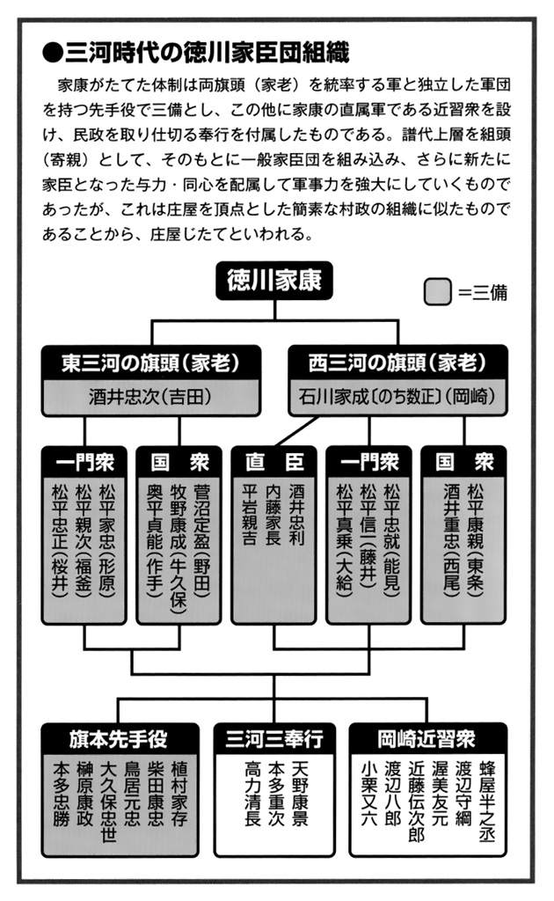
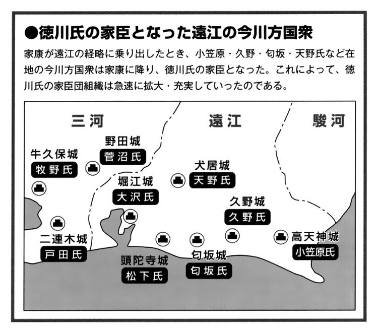

| 小和田哲男選集3 徳川家康 大器晩成の覇者 関ヶ原合戦 (歴史群像デジタルアーカイブス) | |
| 小和田哲男 | |
| (2016) | |
歴史群像デジタルアーカイブス
小和田哲男選集３
徳川家康 大器晩成の覇者
関ヶ原合戦
小和田哲男
本書は「歴史群像デジタルアーカイブス」シリーズのうち『＜徳川家康と戦国時代＞大ボリューム！竹千代誕生～江戸入城』『＜徳川家康と戦国時代＞家康と秀吉 両雄の葛藤と駆け引き』『戦いまでの経緯と勝因敗因分析「関ヶ原の戦い」』『慶長武士事情 関ヶ原以降の浪人問題』『＜徳川家康と戦国時代＞朝廷は不要か』『大坂の陣までの軌跡「家康、駿府移転の狙いは何か」「戦国最後の実戦城郭の建設に着手」』『＜徳川家康と戦国時代＞徳川二頭政治の真実』『＜今川氏と戦国時代＞今川氏崩壊』『＜山内一豊と戦国時代＞出世にみあう家臣募集』を合本したものです。
＜徳川家康と戦国時代＞大ボリューム！竹千代誕生～江戸入城
竹千代から桶狭間まで
強豪織田と今川の狭間で揺れる三河武士
竹千代誕生時の松平家は御家存亡の危機にあった
三河松平氏を独立した一つの戦国大名と規定できるかどうかは議論の分かれるところであるが、少なくとも、家康の祖父にあたる清康の時代には、三河の西半分、すなわち西三河を完全に制圧し、尾張へも進出しはじめており、小さいながらも、戦国大名の範疇に含めてよいと考えられる。
ところが、天文四年（一五三五）十二月、尾張へ進出した清康は、いわゆる「守山崩れ」で二十五歳の非業の最期をとげてしまい、戦国大名としてさらに大きく伸びようとする芽をつまれてしまったのである。しかも、単に芽がつまれてしまっただけではなく、清康にとっては叔父にあたる一族の松平信定が実権を握りはじめ、わずか十歳だった清康の嫡男広忠は岡崎城を逐われ、家臣の阿部定吉らに守られて、かろうじて伊勢に落ちのびることになってしまった。
天文六年（一五三七）六月、広忠は、駿河の戦国大名今川義元のバック・アップをうけて岡崎城に復帰することができた。
しかし、このことによって松平領は今川義元の保護国的な扱いをうけることになってしまったのである。しかも、それだけではなく、三河の内乱状況を隣国尾張の織田信秀が見のがすはずはなく、天文九年（一五四〇）六月には、松平方の有力支城であった安城（祥）城が織田信秀の手に落ち、織田勢が公然と三河へ進出しはじめてきた。「織田勢に対抗するため」という名目で、義元は今川の大軍を三河に送りこんできた。そのため、三河は今川氏の保護国からさらに一歩進んで「植民地」と化してしまったのである。広忠の嫡男竹千代、すなわち、のちの徳川家康が生まれたのは、まさに松平家にとって「ドン底」とでもいうべき状態の天文十一年（一五四二）十二月二十六日のことであった。石川清兼が蟇目の役をつとめ、酒井正親が胞刀の役をつとめている。
竹千代の母は於大といった。刈屋城主水野忠政の娘である。しかし、竹千代が生まれた翌年、天文十二年（一五四三）にその水野忠政が没してしまったことにより、新たな困難が生ずることになった。忠政のあとを嗣いだ信元が、織田信秀の誘いにのってしまい、織田方に走ってしまったのである。松平領は今川氏の「植民地」であり、三河には今川軍が多数駐留していた。その正室の兄が織田方とあっては具合が悪かったのである。
今川義元からの要求があったものか自主的な判断によるものか、そのあたりはよくわからないが、広忠は於大の方を離別することになった。
竹千代が六歳になった天文十六年（一五四七）、広忠はまた一つ難問をかかえこむことになった。広忠にとっては叔父にあたる三木松平の信孝が、すでに織田方となっていた酒井忠尚・松平忠倫らと結び、広忠を岡崎城から追い出し、宗家横領を企てはじめたのである。
よく、「三河武士団は一枚岩」とか「松平党は鉄のような団結」などというが、この時期の松平氏は、広忠の親今川派、信孝・忠倫らの親織田派に分かれて、宗家である広忠の立場もきわめて微妙な、危なっかしい状況に置かれていた。
広忠はこの危機を乗り切るために今川義元の力を頼った。今川軍の力で反対勢力を一掃してもらおうともくろんだのである。しかし、義元もなかなかの戦略家であった。ただでは「うん」といわなかった。「竹千代を駿府に差し出せば援軍を送ろう」と答えている。すでに自力では織田勢はおろか、一族の親織田派ですら追い払えないでいる広忠は、竹千代を手放してでも義元にすがるしか生きのびる方法はなかったのである。
継母の父戸田康光にはかられ千貫文で織田方に売られる
その年八月、竹千代は駿府に送られるため岡崎城を出発している。このとき、竹千代一行は岡崎から西郡（現在の蒲郡）まで陸路をとり、西郡から船で田原に出、そこから陸路をとって駿府に向かう予定であった。
田原城主はそのころ戸田康光といって、広忠が於大の方を実家に送り帰したあと、後妻として迎えられた真喜姫の父である。ところが、この戸田康光があろうことか、織田信秀に通じていたのである。
田原から陸路で東海道に出、東海道を駿府まで下るつもりでいた竹千代一行に、「陸路は織田方の手の者が待ち伏せしていて危険だから」とだまし、そのまま船に乗せてしまったのである。
田原から駿府ということになると、渥美半島を迂廻しなければならない。伊良湖岬の突端をまがらないことで、はじめて竹千代一行は自分たちがだまされていたことを知った。船はそのまま尾張の熱田に入ってしまったのである。大久保彦左衛門忠教が『三河物語』の中で、「竹千代は千貫文で織田信秀に売られた」としているのはこのことで、その後、戸田康光が謝礼として千貫文受け取ったといううわさがあったものであろう。
竹千代の身柄が尾張に拘束されたことにより、信秀からは広忠に対し「わが方に味方せよ、さもなくば竹千代の命はないぞ」と脅迫まじりの勧降の工作がなされたものと思われる。ふつうならば、わが子かわいさから、その申し出にとびつくところであるが、このときの広忠は毅然としていた。たしかな文書・記録はないが、後世の軍記物を総合すると、このときの広忠の返事は、「竹千代は今川家に送ったものである。竹千代が信秀のもとにあるとはいえ、わが子への愛につられて今川家の多年の厚誼に背いては末代までの恥辱である。竹千代を殺すも生かすも存分になされよ」といったようなものであったらしい。
広忠としては武士の意地を貫いたことになるが、竹千代は父にも見捨てられた形となったわけである。以後、信秀は竹千代を軟禁したままにしている。信秀の三男で、のちに織田家の家督を嗣ぐ信長との初対面もちょうどそのころのことであった。
今川義元からの援軍を得た広忠は、翌天文十七年（一五四八）三月、小豆坂の戦いで織田軍を撃退し、さらに四月には、松平信孝を討ち、今川家の〝威〟を借りながら松平氏の勢力挽回につとめていた。
ところが、ここにもう一つの事件がもちあがった。天文十八年（一五四九）三月、二十四歳の青年武将に成長した広忠が、譜代の家臣である岩松八弥に腹を刺され、その傷がもとで息をひきとってしまったのである。
今川義元にしてみれば、これは全く予期していなかったできごとで、まっさきに心配したのは、これがもとになって、松平氏が織田方になびいてしまうのではないかということであった。たしかに、広忠のあととりである竹千代が織田方に軟禁されている以上、家臣の中から、「これ以上今川家に忠節をつくす必要はない」という空気が生まれてきても当然であった。
義元の軍師太原雪斎の策略と思われるが、松平家臣団に動揺が生まれる前に、機先を制して今川軍が岡崎城に乗りこみ、本丸以下主要部分を押さえ、駐留し、さらに、重臣たちの妻子を人質にとり、駿府へ送りこんでしまったのである。これで、重臣たちが相談して織田方につこうという動きを封ずることができた。
さらに、雪斎はもう一つの秘策を考えていた。信秀のもとに人質としてとられている竹千代奪回作戦である。この作戦は、その年、すなわち天文十八年十一月八日から実施された。雪斎を総大将とする七〇〇〇の今川軍が、織田方の三河における最前線の支城である安城城に総攻撃をかけたのである。安城城には信秀の長男信広がおり、雪斎は信広を生け捕りにして、竹千代との人質交換をもくろみ、目的通りこれは成功し、十一月十日、尾張の笠寺で竹千代と信広との人質交換が行われたのである。
義元は竹千代を今川一門格として、その将来に期待していた
竹千代は、今川の軍勢に守られながらいったん岡崎城に入った。すでに広忠がこの世になく、わずか八歳とはいえ、竹千代が広忠のあと嗣ぎであり当主であるという意識を松平家臣団のすべてがもっていた。彼らは、当然、竹千代がそのまま岡崎城主として上に立つものと思っていたのである。
ところが、竹千代は、十二日に亡父広忠の墓参りをしただけで、また、今川軍に守られながら駿府へつれていかれてしまった。十二月はじめには駿府に着いているが、これから永禄三年（一五六〇）五月まで、実に足かけ一二年間におよぶ駿府生活がはじまるのである。
さて、一二年間の竹千代の駿府時代であるが、その境遇は、今川家の人質であったとするのが通説であった。「人質時代の一二年間が、のちの家康を作った」といった解釈は、家康の人物像を語る際に必ずといってよいほどみられ、広く人口に膾炙しているところである。
こうした通説的な理解に対し、最近、研究者の間では、「竹千代は人質として今川家にとられたのではなかったのではないか」という声があがりはじめている。
たとえば、愛知教育大学の新行紀一名誉教授はこのときの竹千代の立場からすると、竹千代は、当主を失った松平宗家の唯一の男性であり、ふつうの人質にみられるような相手に対して異心のないことを示すために送りこまれる人質とはちがっていることを指摘し、むしろ、義元は、幼少の竹千代を庇護し、その成人をまって家督を保証したのではないかという。つまり、一種の御恩であるという解釈である。
新行氏はもう一点、義元が竹千代に自分の姪を嫁がせていることに注目し、外様の一家臣ではなく、今川一門格として扱おうとしたのではないかとする（「若き日の家康」『戦国の覇者徳川家康展─その重くて遠き道─』図録解説）。
私も基本的には新行説に賛成である。築山殿との結婚や、あとでくわしくふれるが、雪斎の薫陶をうけたことなど、純然たる人質にしては厚遇されすぎているという感がある。
ただ、岡崎城の松平家臣団を今川方につなぎとめておくための〝玉〟であったことも事実で、その側面でいえば人質的な役割もいく分かは負わせられていたとみてまちがいないであろう。純然たる人質としてではなく、カッコ付き「人質」と解することができる。
人質というと、何となく暗い、座敷牢に閉じこめられているような印象をうけてしまうが、竹千代の駿府での生活は、決して陰惨なみじめなものではなかった。それはいくつかのエピソードによって証明される。ここでは主なもの二つを紹介しておこう。
天文二十年（一五五一）というから竹千代十歳のときの正月のことである。義元の家臣の主だった者が年始の挨拶のため駿府今川館の広間に集まっていた。そこに竹千代も同席していた。まだ駿府にきて二年目なので、重臣たちの中に竹千代を知らない者も多く、「あれは誰だ」「松平清康の孫の竹千代かもしれん」「いや、そうではあるまい」といったひそひそ話が竹千代の耳にも聞こえてくる。
そのやりとりを聞くともなしに聞いていた竹千代、つと座をたって縁先に出、そこで皆が見ているのもかまわず立小便をしたのである。並みいる諸将は、義元の館の内であり、しかもいつ義元がお出ましになるかもしれないという時に立小便をした。〝勇気〟に驚き、「これはまさしく清康の孫ならん」とひそひそ話をやめたという（『御当家紀年録』）。
竹千代の奔放なさまが伝わってくるようなエピソードであるが、もう一つは年がわからない。竹千代はいつのころからか鷹狩りをおぼえ、お気にいりであった。あるとき、竹千代は、義元の父氏親の菩提寺である駿府郊外の増善寺に出かけた。そこに野鳥がたくさんいるのに気がついた竹千代、「ここで鷹狩りをやる」といい出した。あせったのは家臣たちで、「寺は殺生禁断につき......」と説明して鷹狩りをあきらめさせようとしたが、一度いい出したらきかず、どうしてもここで鷹狩りをやるといって駄々をこねていた。
そこに姿をあらわしたのが、のちに遠州の曹洞宗寺院である可睡斎の一世となった等膳和尚である。この等膳和尚の一喝によって、さしもの竹千代も境内での鷹狩りをあきらめたという（『遠州可睡斎略譜』）。
これらの他にも駿府近辺に伝わる伝説などいくつかあり、総合的にみてみると、竹千代は苦難の少年時代を送ったというよりは、かなり自由で、どちらかといえば、すぐ羽目をはずす茶目っ気たっぷりな腕白少年だったとみるほうが事実に近いのではないかと考えられる。
ところで、駿府時代の竹千代にとって最も大きな意味をもっていたのは、雪斎との出会いだったのではなかろうか。もっとも、竹千代が雪斎から教えをうけたということを記している良質の史料は一つもない。しかし、のち、武田信玄の兵火に罹って焼失した臨済寺を再建し、そこに「竹千代手習の間」というものが復原されていることをみると、弘治元年（一五五五）に雪斎が亡くなるまでの間、竹千代が雪斎の薫陶をうけていたことは事実とみてよいであろう。義元は、将来、三河支配において自分の右腕となってくれるよう竹千代の教育を雪斎にゆだねたと考えることができる。
雪斎が亡くなる直前、弘治元年三月、十四歳になった竹千代は元服し、仮名を次郎三郎、名乗り（諱）を元信と名乗ることになった。元信の〝元〟の字はいうまでもなく義元の〝元〟の一字を拝領したもので、これを偏諱を賜わるといった。考えてみれば、純然たる人質ではこういったケースはみられず、竹千代の場合、やはりカッコ付き「人質」とみなければならない。
元服の年次については翌弘治二年（一五五六）、竹千代十五歳のときとする史料も多く、たしかなことは不明である。
加冠は今川義元自らがつとめ、理髪の役は関口義広で、義元からは大小刀を与えられている。
さて、弘治二年五月（一説には三月）、松平元信は久しぶりに故郷岡崎の土を踏むことができた。これは、亡父広忠の法要を営むためで、これを機会に元信は領内を巡視してまわっている。
老臣の鳥居忠吉が、ひそかに元信を岡崎城内の蔵に案内し、今川方に内密にたくわえた米・銭をみせ、岡崎城復帰の際、松平家再興の資にしてほしいといって、元信を感激させたのもこのときのことである。
岡崎帰郷中のことと思われるが、その年の六月二十四日、元信は三河大仙寺に寺領を寄進し、禁制を下している（『大仙寺文書』）。これは、現在知られている範囲で家康発給文書の初見である。
翌弘治三年（一五五七）正月十五日、元信は駿府今川館で、関口義広の娘と結婚した。関口義広の妻が義元の妹といわれているので、彼女は義元の姪にあたるわけである。単に今川家の重臣の娘を娶ったというだけではなく、姪を妻に迎えたわけで、元信が、今川家において将来のホープとして期待されていたことを物語っている。彼女が築山殿とか築山御前とよばれるようになるのは永禄五年（一五六二）以後のことである。なお、年齢は元信より三つか四つ年上だったといわれているので、十九歳か二十歳であった。
今川方の武将として出陣、運命の桶狭間へ
元服し、結婚したとなると、武将としての通過儀礼としてもう一つ大事なのは初陣である。しかし、それも意外と早くチャンスがめぐってきた。結婚した翌年、すなわち永禄元年（一五五八）二月、それまで今川方となっていた三河の寺部城の城主鈴木日向守重辰が織田方に寝返ったため、怒った義元が元信にその討伐を命じたのである。
岡崎城の松平家臣団は、それまでにも今川軍の先鋒になったりして戦っていたが、今度ばかりは「元信様が大将じゃ」というわけで、今まで以上に奮起した。義元は義元で、元信の武将としての力量を推しはかろうとしていたし、松平家臣団は彼らなりに、元信を盛りたてて強いところをみせれば、早く岡崎復帰がかなうのではないかという期待を抱いていたのである。
十七歳の元信を大将にいただいた松平軍は広瀬・挙母・梅坪などの城を攻め、本城寺部城は夜討ち、しかも奇襲で落としている。老臣たちはその若武者ぶりに落涙したという。そして、元信は初陣をみごとな勝利で飾ることができた。
義元はその賞として、旧領のうち山中三百貫文の地を元信に返付し、腰刀を贈っている。それと、確実ではないが、元信の名乗りを元信から元康へ変えることを許可しているようである。というのは、現在の時点で、元信と署名した最終の文書が弘治三年十一月十一日付の浄妙寺宛のもので、翌永禄元年七月十六日から署名は元康に変わっているからである。
元信という名乗りは義元から与えられたものなので勝手に変えるわけにはいかない。しかし、元信には、祖父清康の武名にあやかりたいという思いがあったらしく、かねてから義元に「元信から元康に改名したい」と申し出ていたようである。初陣にあたって改名したか、初陣の戦功によってその申請を義元が許可したかそのいずれかであろう。
この初陣とその後にひき続く戦いの戦果を材料に、元康の老臣本多広孝・石川清兼らが駿府の義元を訪ね、「元康殿を岡崎にお戻し下さい」と要請しているが、義元は「まだ時期尚早」と、その要請を却下している。ちょうど、弘治三年～永禄元年のころ、尾張において織田信長が急速に抬頭しはじめ、元康を三河で自立させることに義元はかなりの不安をもっていたのである。
そのあと、元康は再び駿府にもどされ、岡崎城には元康の家臣と今川の家臣が駐留する形となったのである。
そして永禄三年（一五六〇）五月、義元は二万五〇〇〇の大軍を率いて駿府を発し、西に向かった。五月十日に先発隊として遠江井伊谷の城主井伊直盛らが出陣しているが、その先発隊の中に元康の姿もあったのである。
今川勢の最前線として尾張に大高城という城があり、そこを鵜殿長照が守っていた。義元は五月十八日、その大高城に兵糧を入れることを元康に命じている。当然、まわりは織田勢が警戒をきびしくしており、容易な任務ではなかったが、元康は奇計をもって無事やりとげている。
運命の五月十九日、元康は朝まだ暗いうちに動き出し、大高城に相対する形となっている織田方の丸根砦に攻撃をしかけている。丸根砦を守っていたのは佐久間盛重といったが、元康の急襲によって砦は落ちている。元康から丸根砦陥落の報をうけた義元は、その戦いぶりを高く評価し、鵜殿長照に代わって大高城に入ることを命じている。
同じころ、大高城に相対するもう一つの織田方砦である鷲津砦の方も朝比奈泰朝の攻撃によって落ちている。
この丸根砦・鷲津砦の陥落は、今川軍が織田軍と衝突してからはじめて具体的な形であがった戦果であった。
しかし、考えてみれば、この緒戦における圧勝が義元側の油断となり、思いもかけない敗戦へ直結していたことはまぎれもない事実だったのである。
今川氏敗報に接し、三河の独立を決断
その日、すなわち五月十九日、義元の本隊は沓掛から大高城に向けて進軍中で、丸根砦・鷲津砦が陥落したという情報が義元のもとに届けられた。義元は、かねて予定していた通り、桶狭間山の陣所で昼食休憩をとることになった。
二砦陥落ということで楽勝ムードがただよい、酒宴というほど大げさなものではなかったと思われるが、酒もふるまわれたらしい。そこへ接近してきた信長率いる織田軍の精鋭二〇〇〇が攻めかかったのだからたまらない。今川軍は総崩れとなり、乱戦の中で義元が殺されてしまったのである。総大将が討たれても今川軍は二万五〇〇〇、それに対する織田軍はわずか二〇〇〇というわけなので、そのまま踏みとどまってもよさそうに思えるのだが、ある意味ではこのときの今川軍は〝連合軍〟的性格をもっていたのである。つまり、有力国人領主の寄せ集め部隊で、義元の死によって、彼らはわれがちに本国めざして退却を開始してしまったのである。
大高城を守っていた元康のもとに戦いの模様と義元の戦死の報が届いたのはその日の夕方だったという。元康も最初は「虚報」であると考えていたようである。戦国の合戦には時折みられるが、「虚報」を流しておびき出したり動揺をさそったりすることはよくみられたのである。
一説には、母於大の方が密書で知らせてきたともいい、また一説には於大の方の兄で信長方だった水野信元がひそかに義元の討死を知らせ、「早く三河に退いたほうがよい」と連絡をしてきたともいわれている。単なるうわさだけで動いたのではなく、たしかに死んだという確実な情報を得てはじめて行動に移した様子がうかがわれる。
大高城は尾張の信長領に奥深く入った今川方の前衛の城であった。元康としてみれば、義元討死の報が入ったのが遅く、しかもその情報の真偽を慎重に確かめていたため、退却も大幅に遅れ、そのまま三河まで退くことができるかどうか不安があったと思われる。しかし、信長のほうは信長で、義元を討つには討ったが、あくまで義元の首一つを取っただけで、二万五〇〇〇対二〇〇〇の軍勢比が逆転をしたわけではなかった。退却軍に追撃をかけるほどの余裕はなかったのである。したがって、元康は、尾張から出ていく今川軍の中では一番最後の部類であったが、追撃をうけることなく、翌二十日には岡崎にまで退却することができた。
岡崎まで戻ってはみたものの、岡崎城は今川軍が占拠しており、そこに入ることはできなかった。岡崎城にほど近い大樹寺に兵を収め、そこを本陣として様子をうかがっていた。このとき、元康がそのまま兵を駿府に進めなかったことは、のちの歴史展開をみると、きわめて大きな意味をもっていたということがわかる。仮に、そのまま兵を駿府に引いてしまっていれば、その後も今川軍の一員として織田軍と戦う事態になっていたであろう。
岡崎にとどまったのは、一面では今川氏のため、「ここに踏みとどまって織田軍を撃退しよう」という意識のあらわれであったとみることもできるが、もう一面では、「これを機会に今川氏から独立できないか」と考えはじめていたとみることもできる。
元康にしてみれば一瞬の決断であったろうが、その後の彼の一生を左右する大きな意味をもった決断であったといえよう。
さて、岡崎城にいた今川軍は二十三日、いっせいに駿府に引きあげていった。大樹寺においてこの様子をみていた元康は、岡崎城が空になるのをみはからって入城している。こうして岡崎衆は、天文十八年に広忠が殺されて以来、ほぼ一二年ぶりに自分たちの主君を迎えることができたのであった。
清須同盟から本能寺まで
信長と同盟、今川・武田氏を撃破
今川氏を見限り、宿敵織田と同盟を結ぶ
桶狭間の戦いにおける今川義元の死は、たしかに今川の「植民地」から独立したいと考えていた元康にとっては好機であった。しかし、その直後の動きをみていると、元康の真のねらいがどこにあったのか理解に苦しむことも多い。
たとえば、桶狭間の戦いの直後、元康が今川氏真に弔い合戦を勧めたことが諸書にみえている。元康は本心から今川家の一員として踏みとどまり、信長と戦おうとしていたのだろうか。私には、元康の「表裏ぶり」を隠蔽するため、のちの徳川御用史家が創作したものであるように思えてならない。元康は、はじめから義元の死を独立のチャンスとみて、独立の方向で動こうとしていたのではなかったか。
ただ、妻の築山殿と長男竹千代（のちの信康）・長女亀姫が駿府にそのままおり、ちょうど人質に取られている形になっていたので、うかつには動けなかっただけではなかろうか。
事実、そのころ、形原松平家広・西郷正勝・菅沼定勝・菅沼定盈といった、田峯・長篠・野田方面の諸将があいついで今川の手を離れるや、氏真は三河の吉田城に取ってあったこれら部将の妻子を、城下の龍拈寺にひきだし、串刺の刑に処しているのである。単に首を切ったというのではなく、串刺の刑にしているあたり、氏真としてもこの処刑をみせしめのために執行したものであったことを示している。連鎖反応をくいとめようとしたものであるし、氏真がこのようなみせしめ的な処罰をした真のねらいは、元康への警告であったことも確かであろう。
史料の上で確認することはできないが、氏真は、引き続き岡崎城に踏みとどまっている元康に対し、駿府への召喚命令を下していたものと考えられる。しかし、元康としてみれば、うかつに岡崎城を動くことはできなかった。この時期、岡崎城を離れて駿府に行くことは、松平領の独立を放棄するに等しい行為だったからである。
岡崎城に踏みとどまっている元康に熱い視線を送っているもう一人の男がいた。信長である。信長は、桶狭間の戦いで義元の首を取ったとはいっても、東からの脅威が完全に消えたわけではなく、美濃の斎藤義龍と戦うために、背後の三河だけは何とか安泰にしておきたいと考えているところであった。信長が元康の去就に注目していたのはそのためだったのである。何とか元康を味方につけることができないか、その方法を模索しはじめたのである。
信長の発案だったのか、あるいは水野信元の進言であったのかはわからないが、具体的には、水野信元が信長と元康の間を斡旋するという形で動き出した。いうまでもなく、信元の妹於大の方が元康の生母だという血縁関係によったものである。水野信元から元康に対しての働きかけがいつはじまったのかは明らかでないが、全体の流れから類推すると永禄四年（一五六一）に入って早々のことと思われる。
というのは、元康が公然と三河における今川方部将、具体的には板倉重定を攻めたのが三月と推定されるからである。つまり、遅くとも二月末までに、元康は今川家からの離脱を決意したものと思われる。当然、家臣の中には今川方に妻子を人質に取られている者もいるので、反対論もあったことは考えられるが、最終的には元康の決断によって今川氏の「植民地」からの独立に動きはじめた。
その年八月、三河長沢城に糟屋善兵衛を攻め、九月には家臣の本多広孝に三河東条城の吉良義昭を攻めさせており、早くも永禄四年の暮までには西三河の制圧に成功し、祖父清康が築きあげた勢力圏を回復している。
そして、翌永禄五年（一五六二）正月、信長との同盟がにわかに具体化するのである。江戸時代、幕臣の木村高敦が著わした『武徳編年集成』には、その年正月十五日、元康が清須城の信長を訪れ、盟約を結んだとみえる。これが世にいう「清須同盟」である。しかも、同書によると、このとき信長は、「和儀早速御許諾欣然タリ、此上ハ両旗ヲ以テ天下一統スベシ、今ヨリ水魚ノ思ヲナシ、互ニ是ヲ救ン事聊モ偽リ有ベカラズ」といって起請文を記し、牛王宝印のつもりで小さな紙に「牛」という字を書いて、それを三つにちぎり、信長・元康・信元の三人で茶碗の水に浮かべて飲んだという。
永禄五年の時点で、信長・元康が「天下一統」云々を口にしたかどうか疑問がないではないが、起請文のことはある程度事実を伝えていると思われる。もっとも、『岩淵夜話』『東遷基業』などによれば、このとき、起請文を読みあげ、読み終わってそれを燃やし、灰を神水にといて、それを信長・元康の二人が飲んだとしている。
たしかに、起請の正式な作法からいえば『岩淵夜話』などに記されている方法が正しいが、あまり先例にこだわらない信長のことなので、あるいは『武徳編年集成』が記すように、「牛」という字を書いてそれを三つにちぎって茶碗の水に浮かべて飲んだのかもしれない。
元康が清須城を訪れたのは隠密行動だったであろうが、元康としても早晩、「清須同盟」が今川氏真の知るところとなるであろうことは覚悟していたものと思われる。しかし、それにしても、人質として取られる形になっている妻子のことは気がかりであり、心を痛めていた。
何とか妻子を奪還する方法はないものかと考えた挙句、一つの方法を思いついたのである。それは、かつて天文十八年（一五四九）、今川家の軍師雪斎が演じてみせた人質交換劇である。そのときは、竹千代と信秀の長男信広とが交換されたが、元康の考えたのは、西郡城の鵜殿長照を攻めることであった。
氏真をして「三州錯乱」と、呼ばしめた元康の東三河進出
その年二月四日、元康は家臣の久松俊勝・松井忠次らに命じ、鵜殿長照の西郡城を攻めさせた。鵜殿長照は今川氏の重臣で、長照の妻は義元の妹といわれている。元康は長照の二人の子を生け捕りにしたのである。元康は、雪斎の策略によって自らが人質交換された経験をもののみごとに生かしている。
生け捕った人質を石川数正が駿府に連行し、築山殿と竹千代・亀姫の三人を受けとり、岡崎城に引き取ることに成功した。
妻子を奪還すると、元康はいよいよ東三河への進出を開始している。早くも五月には富永の牧野氏を攻撃し、六月には、すでに松平方となっていた一宮城が今川軍に攻められるということがあり、その赴援をしているのである。つまり、この年の後半は、今川軍と松平軍の東三河の取りあいが最もはげしくなった時期であった。氏真はこうした状況を「三州錯乱」と表現しているが、その元凶は元康にあったのである。
元康が次第に東三河にも手をのばしはじめたことは、文書発給状況からも確かめることができる。次第に有力部将に対し所領安堵状が出されるようになった様子がうかがわれる。たとえば、五月二十二日付の松平伊忠宛の本領安堵状（『島原松平文書』）、八月六日付の松平康忠宛の所領安堵状（『三川古文書』）などが存在する。
元康は、信長との「清須同盟」によって、三河の統一的支配にむけて着実に一歩足を踏み出したのである。
一向一揆を鎮定し三河を統一。二人家老三奉行体制をしく
今川家から独立したとなると、元康という名乗りに不都合を感じはじめた。とにかく、〝元〟の字は今川義元の〝元〟の字を与えられたからであり、いつまでも元康を名乗っていることは、今川家とのしがらみをそのまま続けているように感じられたのである。
元康を家康という名乗りに変えたのは、永禄六年（一五六三）七月六日のことであった（『徳川幕府家譜』）。家康の〝康〟はもちろん祖父清康の〝康〟そのままであるが、〝家〟の字の由来は何なのであろうか。家康の直系には〝家〟の字のつく人物はいないが、松平一族には結構〝家〟の字のつく人物は多く、形原松平氏では家広─家忠─家信というように、〝家〟の字が通字のようになっており、その他でも、桜井松平に家次がおり、竹谷松平に家清がおり、安城松平には長家という人物もいる。松平一族全体からみればかなり普遍性のある名乗りということができよう。
さて、元康から家康と改名した直後の九月、三河に一向一揆が勃発した。この一揆は、単に門徒ばかりでなく、反家康諸勢力が結集して家康と対抗する形となり、三河統一に一歩踏み出した家康にとっては、第一の関門というか試練のときを迎えることになったのである。
三河一向一揆は長期戦の様相をみせはじめ、翌永禄七年（一五六四）正月十一日の上和田の戦いでは、家康自身銃弾二発をうけるほどの大激戦がくりひろげられている。具足が固かったため、かろうじて命びろいをしたという一幕もあった。
結局、二月十三日に上宮寺の一揆が岡崎城に攻撃をしかけたのを最後に、二十八日ごろには鎮定されたのである。一揆が鎮定されたことの意味は、ただ一向宗の寺や道場が破却されたというにとどまらず、一揆側に属していた家康に敵対する勢力が出奔したり追放されたりしたことにより、家康の力が急速に三河全体におよびはじめた点にあった。
具体的には、東三河における流れが今川から松平に変わった分水嶺ともいうべきものは、その年五月に、二連木城の城主戸田重貞が今川を離れて家康に通じてきたことと、牛久保城の城主牧野成貞がやはり今川を離れて家康方に寝返ってきたことである。
ころあいよしとみた家康は、ついに六月二十日、重臣筆頭ともいうべき酒井忠次に命じ、今川方の東三河最大の拠点であった吉田城を攻めさせている。吉田城を守っていた今川氏真の重臣大原資良は城を支えることができずに退却し、酒井忠次は吉田城に入城した。そしてその直後、本多広孝が田原城を攻め落とし、東三河から今川勢力が一掃されることになったのである。
東三河から今川勢力が一掃されたということは、家康による三河統一が成ったことを意味したが、このとき、家康は新たな体制をうちたてている。二人家老の体制である。吉田城攻めに軍功があった酒井忠次をそのまま吉田城主としたばかりか、忠次に東三河の支配をまかせたのである。つまり、この時点で、酒井忠次は東三河管掌の家老となった。家老といういい方でなく、「東三河の旗頭」などとよばれることもある。
いっぽう、西三河のほうは石川家成が家老になった。岡崎城にいて、西三河の軍政・民政を管掌したわけである。もっとも、少しして石川家成から石川数正にバトンタッチされ、酒井忠次と石川数正が「両家老」などとよばれ、重臣筆頭の位置づけを与えられていた。
新たな体制としてもう一つ注目されるのが三河三奉行の設置である。このほうは永禄八年（一五六五）三月七日に設置したといわれているが、本多作左衛門重次・高力与左衛門尉清長・天野三郎兵衛康景の三人が抜擢されたため、三奉行とよばれたものである。人びとは、「仏高力、鬼作左、どちへんなしの天野三兵」といって、家康のたくみな人選ぶりをたたえたといわれている。
さて、家康としては、三河を統一した勢いで、さらに遠江にまで版図をひろげるつもりでいた。ところが、思いがけない政治状況の流れによって、遠江侵攻に待ったがかけられてしまったのである。家康の無二の同盟者織田信長が武田信玄と同盟を結んでしまった。永禄八年の十一月のことである。
その信玄は今川氏真と同盟を結んでおり、家康としては、今川領に攻め込むことができなくなってしまったことになる。もっとも、考えようによっては、対外侵略の道が閉ざされたことは、家康にとってはかえってよかったことかもしれない。この時期、切り取ったばかりの東三河を支配する態勢作りがスムースに進んだからである。

戦国大名としての家格を上げるために徳川と改姓
そして翌永禄九年（一五六六）も押しつまった十二月二十九日、家康は姓を松平から徳川に改める勅許を得て、徳川家康となったのである。勅許を得て改姓するというのも珍しいことであるが、それ以上に、系図自体もかなり変わったものであった。
近世、徳川御用史家の著わした諸書などを総合すると、この改姓は、三河国誓願寺の僧慶深という者を動かし、慶深が関白近衛前久と親しかったという関係で、前久が間にたち、神祇官吉田兼右が万里小路家から系図をさがし出し、それを持っていた鼻紙にうつし取り、その系図をもとに勅許を得たということになっている。
このときは藤原姓徳川となったが、のち、源姓徳川に乗り換えている。その源姓の徳川系図では、初祖を義季としている。新田義重の子で、上野国の得川郷を与えられ、得川義季を名乗り、やがて徳川という字を使うようになったという。そのあと、頼氏─教氏─家時─満義─政義─親季─有親と続き、この有親は時宗の僧となって子親氏とともに諸国をまわっていたという。親氏の僧侶時代の名前が徳阿弥だというのである。
徳阿弥が三河国加茂郡松平郷に至り、その地の豪族松平太郎左衛門信重の婿となり、そこではじめて松平親氏と名乗ったという。以来、この親氏を初代に数え、泰親─信光─親忠─長親─信忠─清康─広忠─家康に至るというのである。つまり、「本当は松平ではなく、徳川である」と主張する最大のメリットは、「うちは清和源氏新田氏の末裔である」とアピールすることにあったことが明らかである。
これは、どうひいき目にみても、「偽系図」であることは疑問の余地がない。松平郷の一土豪にすぎなかった松平氏を清和源氏につなげるため、苦しいでっちあげが行われたわけであるが、おそらく、家康は、近衛前久・吉田兼右らに相当な額の賄賂を贈り、松平から徳川に改姓したものであろう。
では、なぜ、この時期、すなわち永禄九年の終りにこのような「偽系図」をでっちあげてまでして改姓をしなければならなかったのであろうか。
家康は三河を統一した時点で、三河一国の支配者として中央、すなわち、朝廷、将軍から認定されようとしたのではなかろうか。永禄八年十二月までの家康発給文書の署名の仕方をみると「松平蔵人佐」という低い官位である。ところが名実ともに三河の支配者として受領名「三河守」がほしくなった時点で、松平ではどうしようもない壁にぶちあたることになった。三河守の官職は、位階が従五位下に相当する。つまり、従五位下・三河守の官位が与えられるためには、源氏か平氏か藤原氏か橘氏のどれかでなければならず、松平氏のままではだめだったことが明らかとなる。
なお、松平姓を徳川姓に改めたのはたしかに家康であるが、その発想そのものは家康のオリジナルではない。あまり知られてはいないが、実は、祖父清康が、清和源氏足利流の今川氏の三河進出に対抗するため、一時期、清和源氏新田流の世良田氏を名乗ったことがあった。おそらく家康はこの先例を知り、最終的には新田流に系図をつなげることを思いついたのであろう。
改姓の効果はすぐあらわれ、翌永禄十年（一五六七）正月三日、家康は、徳川家康として、従五位下・三河守に任官しているのである。
信玄としめしあわせ、今川領に攻め込む
三河から遠江に侵攻したくても、信長─信玄、信玄─氏真のそれぞれの同盟によるしがらみによって侵攻できないでいた家康であったが、ようやくその突破口が開かれることになった。信玄が、ついに「甲相駿三国同盟」の破棄を決意したのである。信玄の一方的な同盟破棄を怒った氏真が、その対抗措置として甲斐への塩の移入を止めるいわゆる「塩留」の文書が永禄十年（一五六七）八月十七日の日付になっているので、時期としてはその直前であったと思われる。
そのころから次第に信玄と家康との水面下の交渉がはげしくなり、史料的にはっきりしているものとしては、翌永禄十一年（一五六八）二月十六日付の穴山梅雪から酒井忠次に宛てられたものが初見である（『肥前田島文書』）。これによって、家康からも信玄からも血判の起請文が出されていたことが判明する。
さて、実際に、信玄と家康がしめしあわせ、同時に今川領に攻め込んだのは永禄十一年十二月のことであった。信玄は十二月六日に甲府を出発し、早くも十二日には駿河との国境を越えて駿河に攻め入っている。そして、翌十三日には今川氏の本拠駿府に攻め入り、氏真を逐っているのである。
信玄が駿河に侵入した同じ日、十二月十二日、家康も三河・遠江の国境を越えて遠江に侵攻を開始した。このとき家康は遠江国引佐郡の井伊谷三人衆とよばれる菅沼忠久・近藤康用・鈴木重時の三人にそれぞれ本領安堵と加増の誓書を与え、三人を道案内として遠江に討ち入ったわけである。
井伊谷・刑部・白須賀などの城を落とし、途中、浜名郡気賀付近の土豪・農民たちが堀川城に籠って一揆をおこし、家康の侵攻を妨害したりしたが、家康自身は十八日には引馬城に入っている。引馬城は西遠江の要衝の城であり、早くも天龍川以西は徳川領になった感があった。
いっぽう、駿府今川館を逐われた今川氏真は、重臣筆頭の朝比奈泰朝が守る掛川城に逃げこんでいたが、家康は二十七日から掛川城を包囲しはじめている。
結局、掛川城が開城したのは翌永禄十二年（一五六九）五月十七日のことで、氏真は城を出、掛塚から船で蒲原に向い、妻の実家である北条氏康を頼り、伊豆の戸倉城に落ちていった。この時点で、戦国大名今川氏は滅亡したのである。
もちろん、その後も今川氏の残党が抵抗を続けたりしたが、この時点で、基本的には家康は遠江をも併合することに成功した。しかし、遠江の北部山岳地帯（北遠という）は信濃と地続きという事情もあり、家康より信玄についている部将が多く、三河・遠江二か国を領したとはいっても、遠江の場合には、一円支配というには遠い状況であったことはいうまでもない。
領国が遠江にまで拡大されたことにともない、家康は、居城が岡崎では西にかたよりすぎていると考えるようになった。この点は家康は信長の方式をまねていることが明らかである。信長は、領国がひろがるとともに、新しい領国の最先端に近いところに城を移し、さらにその先をねらうというやり方をしているが、このときの家康もそれと同じであった。
はじめ、家康は遠江の見付（現在の磐田市）に城を造ろうと考えていた。考えていただけではなく実際に築城工事を開始している。ところが、そのころから信玄との間の同盟関係がぎくしゃくしはじめたのである。見付は天龍川の東岸であり、仮に信玄と戦うということになれば、天龍川そのものが〝背水〟になってしまう。おそらく、信長からの指示があったものと思われるが、城を天龍川の西岸に位置する引馬に造りなおすことにした。今川氏の有力支城であった引馬城をとりこみ、それを拡張する形で大規模な城を築きはじめた。家康は、引馬では「馬を引く」、つまり敗戦につながるというので、その地域一帯が浜松荘とよばれる荘園であったことに目をつけ、地名も浜松、城名も浜松城と改称させている。
家康が岡崎城から浜松城に移ったのは元亀元年（一五七〇）のことであるが、そのいつなのかということになると史料によってちがいがある。たとえば『家忠日記増補』では、「正月遠州浜松ノ城、営構既ニ成テ、大神君是ニ移リ給フ」とあって正月のこととするが、『当代記』には、「六月、見付ヨリ浜松エ家康公移リ給フ」と、六月のことと解しているのである。

信玄にしてやられた三方ヶ原の戦い
ところで、家康が浜松城に移転したばかりのころ、家康にとって二つの大きな戦いがあった。一つは姉川の戦いであり、もう一つは三方ヶ原の戦いである。
そのころ、信長は近江の浅井長政、越前の朝倉義景と戦っていた。その最大の激突があったのが元亀元年六月二十八日の姉川の戦いである。このとき、家康は五〇〇〇の兵を率いて近江に出陣し、同盟者信長のために赴援している。
ちょうど姉川をはさんで両軍が対峙する形となり、織田軍には浅井軍が、徳川軍には朝倉軍が対する形となり、はじめ、織田軍は浅井軍に押され気味であったが、やがて朝倉軍を崩した徳川軍が浅井軍の側面にまわりこみ、結局、浅井・朝倉連合軍は退却をはじめ、浅井長政は小谷城に籠城し、朝倉義景は越前めざして落ちていった。徳川軍の働きによって織田・徳川連合軍が勝利できたといっても過言でないような家康の働きぶりであった。
姉川の戦いから帰ったあと、家康は越後の上杉謙信と単独で同盟を結んでいる。この時点では、信長はまだ信玄と結んでいるので、信玄と絶ち謙信と結ぶことはかなりの冒険といえるが、あえて家康は信玄と敵対する道を選んだ。
「家康が謙信と結んだ」という情報が洩れて信玄の耳に入ったものであろう。翌元亀二年（一五七一）三月、信玄の軍勢が遠江に乱入し、高天神城外などを視察して引きあげ、さらに信玄自身、二万三〇〇〇ほどの兵を率いて伊奈口から三河に侵入してきた。この様子をみた信長は、家康に「浜松城から吉田城に退いたほうがよい」と勧告している。しかし家康は、「浜松城を退くくらいなら武士を捨てる」と、浜松城死守の姿勢をみせている。ただ、最近、この元亀二年の信玄による遠江侵攻はなかったのではないかといわれており、検討を要するところである。
翌元亀三年（一五七二）十月三日、信玄が二万五〇〇〇の大軍を率いて甲府を出発し、途中、三隊に分かれ、信玄率いる本隊は十月十日、信・遠国境の青崩峠と兵越峠を越えて遠江に侵攻してきた。武田軍は、浜松城と掛川城・高天神城を結ぶラインを切断したあと、有力支城の一つである二俣城に猛攻をかけこれを落とし、ついに十二月二十二日、浜松城にせまった。
このころ、家康の手もとには八〇〇〇の軍勢しかおらず、信長も三〇〇〇の援軍しか送ってきていなかったので、合わせても一万一〇〇〇であった。信玄軍二万五〇〇〇に太刀打できる数ではなく、はじめから浜松城に籠城し、その間に信長の後詰を待つという作戦をたてていた。
ところが、武田軍は浜松城に近づいたところで向きを急に変え、城下を遠く素通りする形で浜松城の北方にひろがる三方ヶ原とよばれる台地に上がってしまったのである。信玄としてみれば、浜松城を攻め落とすのは容易でないと判断し、野戦にもちこむため、三方ヶ原におびき出す作戦を考えたのである。
そして、家康はまんまとその作戦にひっかかってしまった。三方ヶ原で両軍入り乱れての戦いがあり、数にまさる武田軍が圧勝し、家康はほうほうの態で浜松城に逃げ帰ったのである。
織田・徳川連合軍、武田勝頼の騎馬隊を撃破
三方ヶ原の戦いで家康を破った信玄は、三方ヶ原の少し北の刑部というところで年を越した。そして、天正元年（一五七三）二月十日、三河の野田城を落とし、そのまま信長との決戦にむけて西上を続けると思われた。ところが、軍勢は西に進まず、伊奈街道をとって信濃へ引きはじめてしまったのである。途中、駒場というところで、四月十二日、信玄は息を引きとってしまった。
武田側では信玄の死をかくしてはいたが、やがて家康などもおかしいと感じはじめ、すでに五月九日には家康の軍勢は大井川を越えて駿河に侵入し、岡部に放火し、さらに駿府郊外にも放火してまわっている。武田方の出方をうかがって、信玄の死の実否をたしかめようとしたものであろう。そして、武田軍の反応の鈍さから、信玄の死を確信するようになったようである。
しかし、信玄が死んだからといって、武田軍が瓦解してしまったわけではなかった。あとを嗣いだ勝頼が、しきりに遠江・三河に兵を送り、家康の軍勢と戦っている。この時期の最大の戦いは天正二年（一五七四）五月十二日から六月十七日にかけて戦われた高天神城の戦いであろう。勝頼は二万五〇〇〇の大軍で難攻不落といわれた高天神城を囲み、ついに落としている。このとき、信長自身、家康の要請をうけて救援のために出陣したが、途中、今切を渡るとき、すでに高天神城が落ちたという情報がもたらされ、兵を引いているのである。
勝頼にしてみれば、父信玄ですら落とせなかった高天神城を落としたということで、大きな自信になったと思われるが、結果論からすると、この自信過剰が逆に身を滅ぼすことにつながったともいえそうである。
翌天正三年（一五七五）五月二十一日、戦史に名高い長篠の戦いが三河の設楽ヶ原でくりひろげられたが、ここで武田騎馬隊は、織田・徳川連合軍の馬防柵と鉄砲隊によって完敗を喫し、以後、武田氏の勢力は三河・遠江から急速に後退していった。もっとも、高天神城だけは、天正九年（一五八一）まで武田方が死守しており、長篠の戦い後、家康が三河・遠江両国の一円支配を行ったわけではなかった。
この時期のこととして特筆されるのは、いわゆる「築山殿事件」であろう。事件の発端は天正七年（一五七九）七月、家康の長男信康に嫁いでいた信長の娘徳姫が、父信長に十二か条にわたる訴えをひそかに送ったことにはじまるという。その十二か条には、夫信康の不行跡が書きあげられ、特に、信康とその母築山殿とが共謀して武田勝頼に通じているという内容が含まれていたというのである。
信長は早速家康の家老酒井忠次をよびよせ、十二か条について尋問したところ、その内十か条までは弁解することができず、ついに信長は信康と築山殿の処罰を家康に命じた。
家康は、信康と築山殿の無実を確信しながらも、目上の同盟者である信長の命令にそむくことはできず、徳川という家の存続のため、最愛の長男を犠牲にすることに決心したのである。まず築山殿を浜松城近くの佐鳴湖畔富塚という所で八月二十九日に暗殺し、ついで九月十五日、信康を二俣城で切腹させている。
三遠駿の大名となるも秀吉に一歩出遅れる
天正八年（一五八〇）は高天神城攻めに全精力をそそぎこんだが落とすことはできず、戦いは翌九年にもちこされた。結局、その年三月二十二日、家康は一斉攻撃を命じ、ついに攻め落とすことに成功した。高天神城の落城により、勝頼は遠江への進出の足場を失う形となり、家康はようやく三河・遠江二か国の一円支配の基礎を固めることができたのである。
そして翌天正十年（一五八二）二月、勝頼の力が急速に衰退しはじめたと判断した信長は、ついに武田討伐の軍を組織することになった。このときの部署は、信長・信忠が美濃から。北条氏政が相模・上野から、金森長近が飛驒から、そして家康が駿河からそれぞれ甲斐・信濃に攻め入るというものであった。
家康は二月十八日、浜松城を出て掛川城に入り、二十日には田中城を囲んだ。田中城は勝頼の臣依田信蕃が守っていたが、守りきれないと判断して城を明け渡して退いている。家康は二十一日に駿府に入った。
そのころ、家康は武田一族で重臣の一人穴山梅雪に勧降工作を進めていた。そして三月一日、その梅雪が家康の味方になってきたのである。家康は梅雪を案内役として甲斐に攻め入り、十一日、甲府に布陣をした。その日、信長・信忠本隊に逐われる形で田野まで逃げこんでいた勝頼が自刃し、ついに名門武田氏も滅亡してしまったのである。
戦後の論功行賞で、家康は武田の旧領のうち駿河を与えられ、たちまち、三河・遠江・駿河の三か国の大名となった。甲斐・信濃は河尻秀隆ら信長の近臣に分け与えられている。
五月十五日、家康は梅雪をともなって安土城に赴き、所領を加増されたお礼を述べているが、二十一日には、信長から京都遊覧を勧められ、信長から案内役としてつけられた長谷川藤五郎に案内されて京都に入った。ついで二十九日、堺に行き、松井友閑の饗応をうけている。
堺滞在中の六月二日、家康のもとに、京都の本能寺において信長が明智光秀に殺されたという情報が届けられた。家康は茶屋四郎次郎や伊賀者などに助けられ、伊賀越の間道をとって三河に帰りつくことができた。
しかし、その間に費した日数のロスは大きく、態勢を整えて明智討伐に向かったものの、すでに秀吉が光秀を討っており、家康は一歩も二歩も出遅れ、以後、秀吉の下に属す道を歩まなければならなかったのである。
甲斐侵攻から江戸入部まで
天下人秀吉と実力者家康の虚々実々
五か国領有、海道一の弓取りへ
本能寺の変に続く山崎の戦いで、羽柴秀吉が明智光秀を打ち破ったということは、家康にとって全く予想外のことであった。仮に、そのとき、家康が堺に遊んでおらず浜松城にいれば、光秀を討ったのは家康だったかもしれないのである。信長に一番近い関係にあった同盟者家康のことなので、信長後継者として道がそのままひらけたかもしれない。
ところが、光秀を討ったのは秀吉であった。家康には文字どおり出る幕がなかったのである。しかし、家康はそのまま手をこまねいているような男ではなかった。「いずれは秀吉と何らかの形で衝突することになるであろう」と予見し、「今は、おのれの力を大きくしておくにかぎる」と、がらりと気分を変えている。
ちょうど、甲斐で土豪一揆もおきていた。信長は甲斐・信濃に入った家臣たちに、武田遺臣の採用を禁止していたので、その不満がついに爆発し、甲斐を治めていた河尻秀隆が武田遺臣が中心となった土豪一揆に襲われて殺されてしまい、甲斐一国が無主の国と化していた。信濃も同じような状況を迎えていたのである。
天正十年（一五八二）七月、家康は軍勢を率いて甲斐・信濃に攻めこんだ。同じことを考えていたのが小田原城の北条氏政・氏直父子で、まず、上野の厩橋城にいた滝川一益と神流川で戦い、これを破って上野一国を奪い、さらに碓氷峠を越えて信濃に進入し、甲斐に駒を進めてきたのである。
両軍の衝突は八月からはじまったが、結局、十月二十九日、講和をむすんでいる。家康は自分の娘督姫を氏直に嫁がせ、そのかわり、甲斐の支配権を確保することに成功し、ついで信濃鎮撫にも成功している。電撃的な作戦の勝利であり、また、信長とはちがって、武田の遺臣を積極的に登用していったことが、スムースに二か国を押さえた最大の要因ということができよう。こうして、家康はまたたく間に、三河・遠江・駿河・甲斐・信濃五か国の大名にのし上がったのである。
両雄の力試しとなった小牧・長久手の戦い
さて、山崎の戦い後の織田家の動向であるが、家督相続の問題をメイン・テーマとした清須会議では、三男信孝を推そうとする柴田勝家と、嫡男信忠の子、すなわち信長にとって嫡孫にあたる三法師を推す羽柴秀吉との間に対立があり、結局、三法師が推戴されることになった。
しかし、この決定に、家康は不満だったようである。家康は家中ではないということで清須会議には招かれていないが、長男信忠が死んでしまった以上、二男信雄が家督を嗣ぐのが筋ではないかと考えていたらしい。『家忠日記』によると、天正十一年（一五八三）正月十八日に、家康が尾張の星崎にまで出向き、そこで信雄と会っている。そこでどのようなことが話し合われたかはわからないが、その後の連携につながる伏線になるような話題はあったと思われる。
しかし、その時点では、家康はまだ露骨な形で秀吉と対立的な態度は示していない。むしろ友好的ですらあった。たとえば、その年の四月二十日から二十一日にかけて賤ヶ岳の戦いがあったが、勝家からの援軍要請を蹴っているばかりか、秀吉が勝ったあと、すでに名器として名高かった「初花の肩衝」を石川数正にもたせ、戦勝祝いとして贈っていることにも明らかである。家康が秀吉に対し警戒の念をもちはじめるのは、信孝が秀吉によって切腹に追いこまれたころからであろう。
織田家の力を弱体化させていこうという秀吉のやり口をみて、いつかは秀吉と戦わなければならないときがくると、家康は考えていたようである。本能寺の変後、あたかも鳶に油揚をさらわれた格好になった家康にしてみれば、自分の存在を印象づけるためにも、秀吉との戦いは不可避と考えていたのである。
きっかけとなったのは、天正十二年（一五八四）三月六日、織田信雄が津川義冬・岡田重孝・浅井田宮丸という三人の家老を誅伐したことである。この三家老が秀吉に内通していたというので、信雄はそれぞれの居城を攻めており、この城攻めの軍勢に家康の軍勢も加わっていた。すでに、信雄と家康との共同行動として取りくまれたものであった。
ふつう、小牧・長久手の戦いといっているが、実際は名前の示す通り二つの戦いである。しかし、同じ天正十二年で、しかも、連続している戦いなので、小牧・長久手の戦いとよばれている。
小牧の戦いは三月十三日にはじまっている。この日、家康が兵を率いて清須に赴き、そこで信雄の軍と合流し、軍議を練っている。はじめ家康の方では池田恒興が味方になるとふんでいたが、予想に反し秀吉方になってしまい、しかもその恒興によって犬山城が落とされてしまった。
三月十七日、秀吉方の森長可が功を焦って尾張の羽黒に陣を進めてきた。これを酒井忠次が迎え撃ち、森長可は三百余の犠牲者を出して撤退している。
そのころ、秀吉自身はまだ大坂城にいたが、羽黒の敗戦の報を耳にして急遽出陣し、大軍を率いて犬山城に入り、さらに家康の本陣の小牧山城から二〇町（約二・二キロ）ほどの楽田に布陣をしている。秀吉軍十万、家康・信雄連合軍三万（一説に一万六、七〇〇〇）がにらみあったのである。ふつうここまでを小牧の戦いといっている。
四月に入ってからはむしろ長久手の戦いである。四月七日、秀吉の甥羽柴秀次が大将となり、池田恒興・同元助・森長可・堀秀政らが一万六〇〇〇の軍勢を率いてひそかに南下し、三河に侵入した。家康が小牧山に釘づけになっている間に本国の三河を攪乱しようという作戦である。
ところが、この別働隊の動きは家康方の知るところとなり、家康はまず榊原康政らを先発させ、八日夜半には自らもひそかに小牧山を出て、先発隊と連絡をとりつつ秀次らの軍勢を挟み撃ちにしたのである。戦いの場所が長久手というところだったため、これを長久手の戦いというのである。池田恒興・元助父子をはじめ、森長可ら名だたる秀吉方武将が討死し、大将秀次は命からがら逃げ帰るありさまであった。
全体として軍勢の数にまさる秀吉が有利に進めながら、肝心の局地戦では家康が勝っており、秀吉としては、そのまま戦いを続ける不利を痛感し、まず信雄と講和を結んでいる。秀吉と信雄が和睦してしまった以上、家康には戦いを続ける名分がなくなり、十一月二十一日、家康自身も兵を浜松城にもどしている。
秀吉はそれを追いかけるように滝川雄利を使いとして浜松城に派遣し、家康との講和もとりつけようとした。家康はこれに対し、二男の於義丸を秀吉の養子という形にして秀吉のもとに送っている。
領国経営の拠点を駿府に移す
小牧・長久手の戦いがあった翌年、すなわち天正十三年（一五八五）、家康は、居城を浜松から駿府に移すため、駿府城の築城工事に着手しはじめた。小牧・長久手の戦いのあと、秀吉と講和した直後であるため、駿府への移城を秀吉との対決を避けるためと解するむきもある。
たとえば中村孝也氏は、「一旦妥協した以上、過去にいだいていた競争意識をさらりと放棄し去って、浜松を避けて駿府に退き、秀吉の統一事業を翼成しつつ、一個の東海大名として、黙々として自己に残された一路を歩いたのであった。」（『徳川家康公伝』）と述べている。
しかし、果たしてそうであろうか。消極的な意味で駿府移城を捉えるのではなく、積極的な側面もみておく必要があるのではないかと考えられる。そうした観点でみると、駿府のもつ積極的な意味がクローズ・アップされてくる。
まず、駿府は、かつて今川義元の城下町であった。戦国城下町としては小田原城と並ぶ繁栄をみせたところである。そして、もう一つ重要なのは、三河・遠江二か国時代には浜松が中心であったが、それに駿河・甲斐・信濃の三か国が加わった時点で、浜松では不都合となったことである。特に甲斐をきちっと掌握するためには、甲斐に近い駿河に城を移す必要があったのではなかろうか。さらに、領国拡大とともにその最先端に近いところに城を移すという〝信長流〟を踏襲すれば、新しく領国に加えられた駿河に城を移すことは当然の行為といってよい。
家康は天正十三年七月十九日に駿府へ入り、城の修築に着手しはじめた。もっとも、修築とはいっても、今川氏時代の駿府館とはスケールも構造も全くちがうので新たな築城といってしまったほうが正確である。かなり大がかりな工事だったらしく、『家忠日記』によると、本城、すなわち本丸部分の堀ができあがったのは何と天正十五年（一五八七）十月十二日のことであった。天守閣の工事がはじまったのは翌十六年で、完成したのはさらに翌十七年の四月十日であった。
石川数正出奔を機に家康懐柔をはかる秀吉の奇策
さて、駿府築城がはじまった天正十三年のこととして、家康にとってはショッキングな事件があった。
「両家老」などといわれ、酒井忠次と並ぶ股肱の老臣石川数正が十一月十三日、秀吉方に出奔してしまったのである。家康はまず連鎖反応を心配し、岡崎城に入って城の守りを固めさせる一方、家臣たちに対し、動揺しないよう命じている。家康にしてみれば、徳川軍の軍事機密が秀吉に筒ぬけになってしまったわけで、石川数正出奔の後遺症はかなり大きなものであった。このうち、軍制を旧武田方式に転換していることなどは、その対策の一つだったであろう。
徳川家中が動揺しているその最中、いかにも動揺をみすかすかのごとく、織田長益・滝川雄利・土方雄久が秀吉の使者として岡崎城の家康を訪ね、家康の上洛を催促している。この年七月十一日、秀吉は関白に任官しており、家康も服従させようとしたのである。しかし、家康はこの申し出には応じなかった。
翌天正十四年二月二十六日、家康は工事中の駿府城に立ち寄り、しばらく滞在し、三月九日、伊豆三島で北条氏政・氏直父子と対面している。すでにみたように、家康の二女督姫が氏直に嫁いでおり、徳川・北条同盟の再確認の会見であったと思われる。この時期、家康は、秀吉に臣従する道をとるよりは、北条氏との同盟を強化し、秀吉とは等距離を保とうと考えていたふしがある。
秀吉は秀吉で、「何とか家康を味方につけなければ」という焦りがあった。そこで考え出されたのが、自分の妹を家康に嫁がせるという奇策であった。ふつうならば、単なる政略結婚で奇策とはよべないが、この場合は奇策とよぶにふさわしい。
何せ、秀吉の妹朝日姫（旭姫とも）は、すでに佐治日向守（副田甚兵衛とも）という侍に嫁いでいた。それを強制的に離婚させ、家康に押しつけてきたことが異常の一つ。さらに、朝日姫は四十四歳という高齢であった。
しかし、家康はこの強引な政略結婚を拒むことはできなかった。これを拒めば武力対決になることが火をみるよりも明らかだったからである。結局、その年の五月十四日、朝日姫と家康の婚儀が浜松城で行われた。
妹を嫁がせた秀吉は、「当然、家康は上洛してくるであろう」と考えていた。ところが、家康はその期待を裏切り、上洛しようとはしなかったのである。そこで、秀吉は、最後の切り札として、生母大政所を岡崎に送ることにした。もっとも、大政所には人質であることは隠し、あくまで「朝日姫に会いに行って下さい」ということにしていたようである。
十月十三日、大政所が京都をたって岡崎に向かい、十八日に岡崎城に着いた。それといれかわりに家康は二十日に岡崎をたって二十四日に京都の茶屋四郎次郎の屋敷に入っている。はじめ、大政所が人質として下されるという情報が入ったときも、家臣の中には家康の上洛に頑強に反対する者もあったが、今度ばかりは家康も秀吉の上洛要請を黙殺することができなかったのである。
二十六日、家康は大坂に赴き、秀吉の弟羽柴秀長の屋敷に入った。その夜、ひそかに秀吉自身が家康のもとを訪れ、上洛を感謝し、翌日の正式対面のことを依頼している。このとき秀吉は家康の手をおしいただき、懇願したといわれているが、秀吉としては、武力で家康を倒すことは相当な困難をともなうと考えていただけに、平和裡に家康が臣従することになったというわけで、最大限の演技をしたものであろう。
翌二十七日、家康は諸大名の居並ぶ前で秀吉に謁し、ここに、秀吉と家康との正式な講和が成ったのである。
京都を十一月八日にたった家康は、十一日には岡崎にもどり、翌十二日、人質の形で岡崎に滞在していた大政所も大坂へ送り帰されることになり、ここに、秀吉にとって、小牧・長久手の戦い以後、長いこと懸案となっていた、家康上洛という一大イベントは終了したのである。
ところで、これにさきだち、すでに家康は九月十一日、その日が吉日というので、駿府城に移る仮の儀式はすませていた。その後、上洛のことなどもあって駿府城への移城がのびのびになってしまっていたが、十二月四日、正式に浜松城から駿府城に移り、そこを五か国領国経営の本拠としたのである。
家康上洛のためのお膳立てを整えたのは、すでにみたように、家康の二度目の正室として送りこまれてきた朝日姫である。もっとも朝日姫の身になってみれば、これほど理不尽な結婚もなかったわけである。夫と強引に別れさせられた挙句、意にそわない結婚を強制させられたのである。彼女は三年後の天正十七年（一五八七）七月、大政所の病気見舞のため上洛し、そのまま病気になってしまい、とうとう家康のもとに帰ることなく、翌天正一八年（一五九〇）正月十四日、聚楽第で没してしまったのである。秀吉は、自分の権勢欲の犠牲となったこの妹のために、京都東福寺に南明院という塔頭を建て、菩提をとむらっている。家康も駿府の瑞龍寺に供養塔を建てている。
旧領の遺制を採用した家康の巧みな領国支配
家康が領国とした駿河・遠江・三河・甲斐・信濃の五か国は、どのくらいの経済力があった地域なのだろうか。実際に家康がいた時代、すなわち、天正十年（一五八二）から同十八年（一五九〇）にかけての時期のデータは残念ながらないが、その少しあと、秀吉の太閤検地に基づいてはじき出された数字が「慶長三年検地目録」によって判明するが、それによると、
駿河 一五万石
遠江 二五万五〇〇〇石
三河 二九万石
甲斐 二二万七〇〇〇石
信濃 四〇万八〇〇〇石
ということになり、合計で一三三万石を数えている。関ヶ原の戦いの直前における毛利輝元や上杉景勝とほぼ同じ石高で、だいたいどの程度の力であったかの想像はつくと思われる。家康はこの五か国をきちっと支配することによって、秀吉に対抗しうる一大勢力としての立場を確保したわけである。
家康が五か国支配に乗り出したばかりのこととして興味深いエピソードがある。『徳川実紀』附録三に、
「甲斐の府に入せ給ひし時、信玄このかた大罪のものを烹殺せしといふ大釜あまたありしを、駿遠三に一つ〳〵引移せと命ぜらる。本多作左衛門重次この事承り、例の怒を発し、殿の御心には天魔の入かはりしにや。かの入道が暴政をよしと思召。ようなき物をあまたの費用もて引移させ給ふこそ心得ねとて、をのれ其釜ども悉く打砕き水中に棄てけり。君大に咲はせ給ひ、さてこそ例の鬼作左よと仰られしとぞ」
と記されている。これが『武野燭談』巻十所収の「本多作左衛門入煮釜を打砕く事」では駿府の安倍川原の刑場の釜ということになっている。釜そのものは甲府にあったものか駿府にあったものか判然としないが、武田旧領を領国としたあとの、家康およびその家臣団たちの対応ぶりが彷彿としてくるようなエピソードである。
家康は、今川氏や武田氏の遺制のよいところを取り入れ、悪いところを極力排除しながら、自分にあった領国経営の秩序を次第にうちたてていったものであろう。
今川氏の制度を引き継いだ七か条の定書
天正十七年（一五八九）、家康の五か国支配の上で画期的な二つの施策がみられた。一つは七か条定書の公布であり、一つは「五か国総検」の名でよばれる五か国総検地である。
まず、七か条定書の方からみることにしよう。
七か条定書は現在のところ、駿河・遠江・三河・甲斐の四か国の郷村から、ほぼ同文のものが一六〇通余確認されている。しかし、家康の領国だった信濃からはまだ一通も見つかっていない。
今後、新たに発見される可能性もないではないが、もしかしたら、信濃には最初から発布されなかったものかもしれない。
年貢と夫役が当時の農民たちの基本的な負担であったが、この七か条定書は、その年貢と夫役を定めたもので、家康が効率よく郷村を支配するために、農民支配の統一基準を明示したものであった。
第一条と第六条は年貢に関係する条項で、第二条、第四条、第五条は夫役に関する条項で、陣夫役・四分一役などが規定されている。
特に注目されるのは四分一役で、これは今川氏の制度をそのまま引きついだもので、それが徳川領国に拡大されたことがうかがわれる。ちなみに四分一役というのは普請人足役のことである。
その他、第三条は農民の屋敷についての規定、第七条は竹藪がある場合の竹の負担を定めたものであった。
太閤検地と異なる独自の五か国総検地
つぎに、五か国総検地であるが、家康が自分の領国である五か国に検地を施行したことは、『当代記』巻二、天正十七年の項に、「此年、三遠駿信甲、自家康公 有縄打」とあることによってうかがわれ、実際、天正十七年から翌十八年にかけて、五か国の郷村に実際の検地帳が残存することによって確実視される。しかもおもしろいことは、さきの七か条定書の奉者が、検地のときの検地奉行になっているという例がかなりみられるという点である。このことは、家康の施策として、七か条定書と五か国総検地が一連のものと意識されていたことをうかがわせる。
有縄打」とあることによってうかがわれ、実際、天正十七年から翌十八年にかけて、五か国の郷村に実際の検地帳が残存することによって確実視される。しかもおもしろいことは、さきの七か条定書の奉者が、検地のときの検地奉行になっているという例がかなりみられるという点である。このことは、家康の施策として、七か条定書と五か国総検地が一連のものと意識されていたことをうかがわせる。
ところで、検地というと、どうしても太閤検地が思いおこされる。家康の検地は太閤検地の一環としてとりくまれたものなのであろうか。検地帳をみると、一反が三六〇歩となっており、すでに一反が三〇〇歩となっている太閤検地とはちがう。しかも、太閤検地にはみられない「分付記載」が家康の検地にみられ、また、家康の五か国検地は「俵高」制をとっており、明らかに異質である。
本多隆成氏は、「小牧・長久手の役後豊臣政権に臣従しながらも、五か国において独自の権力構築をはかり、とりわけ小田原攻めの可能性を背景に独自の総検地を行なうことにより、権力編成の近代的転換を果たそうとしたものとして位置づけられるであろう」と、その意義についてまとめている（「初期徳川氏の検地と農民支配─五ヶ国総検地を中心に─」『日本史研究』二一八号）。
家康の発展は今川・武田の遺臣登用にあった
五か国支配の展開という点でもう一つ注目されるのは、今川氏、武田氏の遺臣を積極的に登用したことである。井伊直親の遺児井伊直政が家康に召し出されたのは天正三年（一五七五）のことといわれているので、五か国時代ということにはならないが、今川氏が、滅んだあと武田氏に仕え、さらに武田氏が滅んだあと家康に仕えるようになった者は多い。
天正十年（一五八二）の甲斐侵攻の課程で土着武士団ともいうべき武川衆・九一色衆などを懐柔したのを皮きりに、武田遺臣の曽根昌世・岡部正綱・成瀬正一の三人を仲介として武田遺臣の従属を進めている。その年、武田遺臣で、家康に仕えるようになった者が家康に対して起請文を提出している。それが「天正壬午甲信諸士起請文」である。写本によって、八二六人、八四二人、八九五人とまちまちであるが、八百人余の武田遺臣が家康に召し抱えられた。
家康が抜擢した異色の部将としては大久保長安をあげることができる。甲斐における家康の直轄地支配に辣腕をふるい、やがて、国奉行から代官頭へと異例の出世をとげ、さらに佐渡金山、石見銀山の奉行となって家康の財政を支える主要人物にのしあがったことは周知の通りである。
今川、武田の遺臣を登用したことが、その後の家康の発展にとって大きなバネになったことが指摘される。
秀吉のもとで、小田原城攻めの先鋒となる
五か国支配を着実に進めていった家康であるが、天正十五年（一五八七）あたりから、大きな外交路線上の問題を抱えこむことになった。すでにみたように、家康は、二女の督姫を北条氏直に嫁がせ、北条氏とは同盟を結んでいた。
また、家康自身、秀吉の妹朝日姫を娶り、秀吉と同盟、というより臣従する関係にあった。天正十五年、秀吉が九州攻めを行い、天下統一のために残るは関東と東北地方だけという事態を迎えたところで、秀吉と北条氏との関係がにわかに緊迫の度を加えたからである。
秀吉は、家康に要求したと同じように、北条氏政・氏直父子に対しても上洛し臣従することを求めた。しかし、関東に独自の勢力をうちたてていた氏政は、その要請を拒否したのである。北条氏にも、そして秀吉にも姻戚関係がある家康が、その間に立って苦慮するわけであるが、家康は、時代の流れ、時の勢いとしては、秀吉の方がはるかに有利であると考え、秀吉サイドとして動きはじめた。
具体的には天正十六年（一五八八）五月二十一日のことになるが、家康は、起請文の体裁をとって並々ならぬ決意で、早く氏政の兄弟の誰かを上洛させて、秀吉に謁見すべきこと、さもなければ督姫を離縁してほしいと氏政・氏直父子に申し送っている（『鰐淵寺文書』）。このときは、さすがの氏政も、弟の氏規を八月二十二日に上洛させているが、北条氏そのものの反秀吉的体質は変わっていないので、事態が好転するには至らなかった。むしろ、悪化の方向に進んでいったのである。
このころ、北条氏と秀吉との間に、上野沼田領問題という係争があった。これは、真田昌幸の所領問題でもあり、家康もからんでいる複雑な問題であった。氏政・氏直は、「沼田問題が解決しなければ上洛しない」という態度をとっており、秀吉との戦いになることも想定し、小田原城やその他の支城を修理・拡張し、また、武器の製造から兵糧の確保に至るまで万全の用意もはじめていた。
ところが、翌年十月二十三日、北条氏邦の家臣で、当時沼田城代を勤めていた猪俣邦憲が、突如、真田昌幸の支城名胡桃城を奪いとってしまうという事件が勃発した。秀吉はこれを天正十五年に発した「関東・奥両国惣無事令」、すなわち私戦禁止令違反としてとらえたのである。
ついに十一月二十四日、五か条からなる長文の宣戦布告状を氏政・氏直父子に送りつけ、急を聞いた家康は十二月十日に上洛して秀吉と会い、聚楽第において具体的な北条氏討伐の手だてについての相談が行われている。このとき、家康も全面的な協力をする旨、秀吉に約束している。
年が改まって天正十八年（一五九〇）、いよいよ小田原攻めの年である。正月二十一日、家康は家臣を駿府城に集め、軍議を開いている。なお、その間に家康は三男の長丸を上洛させている。家康としては長丸を人質のつもりで上洛させたのだが、秀吉は聚楽第に長丸を招き、自ら〝秀〟の一字を与えて秀忠と名乗らせ、元服しているのである。その上で、駿府に帰してよこした。
家康は、「長丸が帰されたのは、秀吉が小田原を攻めるとき、三河・遠江・駿河の城を使いたい下心があるからであろう」と看破し、本多正信を呼んで、領内の城にその用意をさせるよう命じている（『徳川実紀』附録五）。
二月十日、家康は三万の大軍を率いて駿府城を出陣した。秀吉軍の先鋒としての出陣である。このとき、秀吉軍の総勢は二一万とも二二万ともいわれている。一部北陸支隊とか水軍などもあるが、そのほとんどが東海道を通ることがはっきりしているので、家康がまっさきにはじめたのは、東海道を、いかに秀吉の大軍が通りやすいようにするかであった。家康は富士川に舟橋を架けさせるなどいろいろと努力していたのである。
秀吉自身は三月一日、三万二〇〇〇の直属軍を率いて京都を出発し、十九日には家康留守中の駿府城に入城した。家康の重臣の本多作左衛門重次などは、「徳川の本城である駿府城に秀吉を泊めるなどということは、奥方を貸すようなものだ」といって反対したというが、すでに、家康の腹は固まっていた。
もっとも、当時、世間では、家康が本心から秀吉に臣従しているのかどうか危ぶむも声もあったようである。「家康と織田信雄とが手を組んで秀吉を殺そうとしている」などという物騒なうわさもとびかっていた。こんなエピソードも伝わっている。
秀吉が駿河の浮島原に到着したとき、先鋒として出陣していた家康と信雄が秀吉を出迎えた。秀吉は乗っていた馬から飛びおりざま、太刀の柄に手をかけ、「信雄、家康に逆心ありと聞く、立ち上がられよ、一太刀まいらん」と叫んで斬りかかる格好をした。
秀吉は、相手がどんな反応を示すか試そうと演技でやったことであるが、信雄は真にうけてあわてふためいて逃げまわり、それに対して家康は全く動じず、かえって、秀吉の左右の者に、「殿下が軍始に御太刀に手をかけられた。目出たいことだ、皆お祝いなされ」と促したという。
このようなことが、果たして事実であったかどうかは疑問であるが、斬りかかった場所を沼津の三枚橋城とする所伝も存在する。仮に三枚橋城でのできごとだとすると三月二十七日ということになる。
秀吉は北条方最前線の城である山中城を豊臣秀次に攻めさせ、韮山城は織田信雄らに攻めさせ、家康を先鋒として小田原城に向かわせた。
家康は小田原城大外郭の東側、すなわち、渋取口（山王口）の方面から攻めはじめた。すでに四月三日から小田原城は包囲され、ここに大籠城戦が始まったのである。秀吉は得意の長期戦で、兵糧攻めにかかり、「対の城」としての石垣山城の構築もはじめ、自ら淀殿をよびよせている。
そのいっぽうで、領内に散らばる小田原城の支城を各個撃破し、小田原城だけを孤立させる作戦をとって圧迫した。
そのため、徹底抗戦が不可能なことを知った氏直は、ついに七月五日、小田原城を出て家康の陣所を訪ね、自ら切腹するかわりに城兵の命を助けるように求めてきたのである。家康はそのまま氏直を滝川雄利のもとに行かせ、秀吉に氏直投降の由を連絡した。
翌六日、家康の家臣榊原康政が、秀吉の部将脇坂安治・片桐直盛とならんで小田原城を受け取り、家康自身は十日に入城している。
家康、後日を期して駿府より関東へ入部
小田原城攻めの最中、家康本人がどう考えていたかわからないが、家臣たちの認識には、「小田原城が落ちたら、伊豆一国が加増されるのではないか」という見通しがあったようである。この年四月二十三日付の星屋修理亮に宛てられた本多正信の書状に、「豆州の儀は、はやばや殿様へ使わされ候間......」（『星谷文書』）という一項があり、それまでの五か国に加えて新たに褒美として伊豆がもらえると思っていたらしいことがわかる。
七月十三日、小田原城中で、秀吉から諸将に対する論功行賞があった。先鋒をつとめ、しかも抜群の働きをしたということで、家康に北条氏の旧領関八州が与えられるという発表である。もちろん、そのかわり旧領である駿河・遠江・三河・甲斐・信濃の五か国は収公された。
関東には、それまで敵対していた北条氏の余風がそのままの形で残っていることはいうまでもない。しかも、五か国支配はようやく軌道にのりはじめたところであり、駿府城もやっと完成したところである。石高はふえても、これは栄転ではなく左遷であることは誰の目にも明らかであった。家臣たちの中には、「こんな転封なら断ってしまえ」と強硬意見を主張する者もあらわれてきた。しかし、家康は、この命令に従ったのである。
関八州に移るとすると、どこを居城にするかがつぎの問題であった。小田原城は無血開城なので、そのまま使おうとすれば使えた。鎌倉も候補にあがったようであるが、家康は、北条氏時代一支城でしかなかった江戸城をみたてている。もっとも、江戸選定を家康に勧めたのは秀吉であった。
家康は駿府城を出陣したまま駿府にもどることなく、小田原城から江戸に向かい、八月一日、砦といってもよいほどの江戸城に入っていった。
●column 石川数正出奔事件の真相
石川数正といえば、酒井忠次と並んで「両家老」といわれた家康家臣団中の双璧である。永禄十二年（一五六九）からは、叔父石川家成にかわって「西三河の旗頭」となっている重臣中の重臣であった。家柄もよい。祖父清兼は、家康が誕生したとき蟇目の役をつとめたことで知られている。
まだ竹千代とよばれていた家康が駿府にあったときもこれに従っており、家康幼少時からの股肱の臣であり、家康の戦いにほとんど出陣しており、しかも外交の面においても有能であった。まさに三河武士を象徴するような非のうちどころのない忠臣だったのである。その数正が、天正十三年（一五八五）十一月十三日、突如として出奔してしまったのだから、これは大事件である。しかも、あろうことか、飛びこんだ先が羽柴秀吉のもとだというのだから、家康にしてみれば二重のショックであった。徳川軍の軍制を作りあげるのに数正の功績が大であったといわれている。その当の数正が秀吉のもとに走ってしまった以上、徳川軍の軍法・軍事機密のすべてが秀吉の知るところとなったと解釈しなければならない。こののち、家康が急速に旧武田軍の軍法をとりいれ、武田式軍制にぬりかえていった理由もそこにあったのである。
では、「無二の忠臣」ともいうべき数正が出奔したのはなぜだったのだろうか。その理由を考えていく上で看過できないのは、やはり、出奔した時期、つまり、天正十三年十一月という時期がどういう時代の流れの中に位置していたのかという点である。
よく知られているように、家康と秀吉が戦った小牧・長久手の戦いは前年、天正十二年のことであった。この戦いは、どちらも決定的なダメージを相手に与えることなく、講和という形で決着している。しかし、力関係のちがいは誰の目にも明らかであった。家康が、二男の於義丸（後の結城秀康）を養子として秀吉のもとに送りこんでいるが、形は養子でも、実質は人質に等しかったのである。
当然、秀吉は家康に対し、つぎの要求をつきつける。「上洛せよ」という命令である。表面はおだやかで、その実、火花を散らすような二人のやりとりが、その後一年ほど続くのである。家康と秀吉の交渉の使者となり、何度も浜松城と大坂城の間を往ったり来たりしたのがこの石川数正だったのである。
実はこの点が非常に重要で、家康の家臣多しといえども、直接、秀吉に接触していたのは石川数正ただ一人だったという事実が、数正出奔事件の真相を明らかにするキーポイントではないかと考えられるのである。
数正は、秀吉の謦咳に接し、秀吉の偉大さを知ったのではなかろうか。家康とは力の差が歴然としている。「秀吉が天下を取るのはもはや時間の問題である」と判断を下したように思えるのである。しかし、仮にそれだけの理由であれば、自分の主張を述べればすむことである。出奔といった非常手段をとるからには、それ以上の理由がなければならない。
したがって、理由としては二番目になるが、浜松城では、数正の主張に同調する者が一人もいなかったという点である。主君である家康はもちろんのこと、家臣たちの誰一人として数正の「秀吉評価」論に耳を貸さなかったと思われる。つまり、数正の「秀吉評価」論は徳川家中では孤立してしまったのである。
孤立しただけなら、出奔という事態にまでは追いこまれなかったろう。純朴な、というか、一本気で頑固な他の家康家臣たちが、数正を〝秀吉のまわし者〟とみはじめたのである。徳川家のためによかれと思って動きながら、同僚からそのように見られることほどつらいことはないであろう。いつしか、徳川家を見限る気持が芽ばえたとしても不思議はない。それと、あくまで私の推測であるが、家康との〝精神的〟な衝突があったのではないかと考えている。数正の生年は不明である。ただ、数正は、家康より十歳ほど年長と思われ、少年時代の家康を常にリードしていたと考えられる。おそらく、家康は、酒井忠次と、この石川数正の二人のいう通りにことを進めてきたと思われるのである。
「秀吉には絶対頭をさげない」という自己主張をしはじめた家康の姿をみて、「老臣」としての今後の自分のありように、何か暗い将来を感じはじめたのではなかろうか。
そして最後にもう一つの理由があった。秀吉からの誘いかけである。戦国時代は、よくいわれるように、「強い者への傾斜」の時代であった。のちに、武士道徳の柱のようにいわれる「武士は二君にまみえず」といった概念はまだない。これは。忠誠心のかたまりのようにいわれる三河武士についても同じであった。
秀吉は、一つには数正の力量を評価し、同時にもう一つの側面としては、鉄壁とみえる徳川家臣団に亀裂を生じさせるために、数正の懐柔にのり出したと考えられる。のちに、数正は秀吉から特に重く用いられてもいないので、むしろ後者の意味が強かったということはできる。
天正十三年十一月の時点をとってみれば、家康より秀吉のほうがはるかに成長株である。家康がのちに天下を取っているので、「数正は早まってバカなことをしたな」とみられるが、数正出奔のときには、家康が天下を取るなど百に一つも考えられない状況であった。
私にいわせれば、数正は、自分の能力を正当に評価してくれそうな秀吉を見込み、主代えをしたにすぎない。数正は、当時の戦国武士の常識にもとづいて行動しただけであり、「不忠者」とか「裏切り者」のレッテルをはるのは、「神君」史観のなせるわざということができよう。
＜徳川家康と戦国時代＞家康と秀吉 両雄の葛藤と駆け引き
北条氏と秀吉の
狭間の大戦略 駿府移転
小牧・長久手の戦い後、
家康は居城を浜松から駿府に移転することを計画し、築城工事に取りかかった。
この動きを「秀吉との摩擦を避け退いた」との見方がある一方で、
「北条氏との絆を強化するため」とする見解もある。
水面下で行われた両雄の葛藤と駆け引きを分析する。
徳川・北条・伊達の三国同盟
家康が秀吉と戦うことを決意した背景に、家康と北条氏政・氏直父子との同盟があったことは、すでに指摘されている通りである。しかし、ただ同盟関係にあったというだけでは、小牧・長久手の戦いの歴史的意義を正しくつかむことはできない。
秀吉の天下構想と、家康の天下構想が小牧・長久手で衝突したわけで、二人の国家ビジョンの点から、小牧・長久手の戦いをとらえ直すことが必要ではないかと考えられる。
いうまでもなく、秀吉の天下構想は、信長路線を引きついで、「天下布武」を実現させることであった。中世の三つの権門といわれた武家・公家・寺家のうち、公家と寺家を排除した武家だけによる単独政権である。天正十一年（一五八三）四月の賤ヶ岳の戦いで柴田勝家を破ったことにより、秀吉が信長路線の後継者として、世間の認知を得る形になっていた。
それに対し、家康は、はじめから秀吉の政権樹立に異を唱えるというわけではなかった。というより、そのころは、秀吉が天下を取るなどということが既定の方向とはまだ決まっていなかったといった方がよいかもしれない。
家康としてみれば、「秀吉はたしかに信長の後継者にふさわしい。しかし、その秀吉が天下平定を成し遂げることができるかどうかはまだわからない」といったところだったのであろう。
秀吉が着々と勢力圏を広げていけば、家康も家康で勢力圏を広げていったのである。その意味では、天正十一年四月の賤ヶ岳の戦いと、翌十二年の小牧・長久手の戦いとは、戦いの性格がかなりちがっていた。
賤ヶ岳の戦いは、同じ信長家臣だった秀吉と勝家が、ポスト信長の覇権をかけて戦った戦いであったが、小牧・長久手の戦いは、秀吉と、信長の同盟者だった家康との戦いであり、それぞれ独立した大名同士の戦いとして位置づけられる。
小牧・長久手の戦いの前年、すなわち天正十一年の八月十五日、家康の娘督姫が、北条氏政の嫡男氏直に嫁いでいる。いうまでもなく、これは政略結婚で、ここに、家康と氏政・氏直の同盟、すなわち、徳川・北条同盟が成立したのである。
しかも、注目されるのは、その北条氏政・氏直父子が、奥州の伊達輝宗とも同盟を結んでいた点である。北条氏を軸にして、徳川・北条・伊達の「三国同盟」が樹立されていたわけで、軍勢の数では圧倒的に劣る家康が、秀吉と戦うことを決意したのには、こうした事情もあったことをみておかなければならない。
実際、小牧・長久手の戦いがはじまったとき、家康から氏政・氏直父子に「御加勢」、すなわち援軍の要請があったことが、天正十二年四月六日付北条氏規の文書（『不破文書』）によってはっきりする。
このとき、氏政・氏直父子が、万難を排してでも家康のところに援軍を送っていれば、事態は少しちがったかもしれない。ところが、ちょうどこのとき、北条氏も上野の戦いに忙殺されており、援軍を送ることができなかった。
のち、家康が北条氏との同盟を一方的に破棄するが、そこに至るプロセスにおいて、「このとき、援軍を要請したにもかかわらず、北条側はそれに応じてくれなかった」との思いがしこりとして残ってしまった可能性はある。
北条氏からの援軍はこなかったものの、家康は小牧・長久手の戦いで善戦した。局地戦という形で表現される三月十七日の羽黒の戦いでは、秀吉方の森長可の軍を破っており、四月九日の長久手を戦場とした戦いでは、家康は、秀吉側の池田恒興・元助父子、森長可らを討ち取っているのである。
この四月九日の戦いでの勝利は、家康にとっても記念すべき勝利だったらしく、四月十日付で、北条氏政に戦勝報告を書き送っている。
ただ、残念ながら、このときの家康が書いた北条氏政宛の戦勝報告は文面が伝わっていない。そのかわり、戦勝報告を受け取った氏政からの戦勝祝賀の書状は写しの形で「古證文」という文書集に伝わっていた。
この家康宛氏政の戦勝祝賀の書状によって、戦いの名が「岩崎口の戦い」だったこと、家康方では、池田恒興・元助父子、森長可、堀秀政、三好信吉（羽柴秀次）ら一万余を討ち取ったと宣伝していたことがわかる。
家康は、援軍を送ってはくれなかったが、同盟者北条氏政に戦勝報告を送り、同盟関係の継続をアピールしていたことがうかがわれるのである。秀吉と戦うには、北条との同盟、さらには伊達との同盟が不可欠なものとして位置づけられていたのであろう。
秀吉の「敗北」と関白任官
秀吉は、力で家康をねじふせるのはむずかしいと判断し、織田信雄に手をまわした。そもそも、この小牧・長久手の戦いの発端は、秀吉に圧迫されはじめた信雄が家康に泣きつき、家康が信雄を前面に押したてて秀吉と戦うことになったからである。
秀吉が信雄を懐柔して講和を結んでしまえば、家康が秀吉と戦う大義名分が失われると考えた。秀吉としてみれば、このまま長期戦になることは好ましいことではなかったからである。
なぜならば、一つには、戦場となっている尾張にだけ力を投入するわけにはいかなかったからである。天下平定を進めていく上で、まだまだ戦わなければならない敵はたくさんいた。
そしてもう一つの理由は、秀吉軍がおよそ一〇万という大軍だったのに対し、家康・信雄連合軍がわずか一万六〇〇〇ほどといわれており、秀吉としてみれば、五倍以上の兵力で、兵力数で断然劣る家康を破ることができないということが広まれば、秀吉のその後の天下平定の戦いにマイナスになるという判断があったからである。
結局、秀吉は、信雄と単独講和を結ぶことに成功した。秀吉の計算通り、これで家康は秀吉と戦い続ける大義名分がなくなり、兵を引き、講和を結んでいる。
講和のしるしとして、このあと、家康の二男於義丸（のちの結城秀康）が秀吉の養子になる形で大坂城に送られているが、名目上は養子でも、実質は人質だった。ただ、このときの講和は、あくまで小牧・長久手の戦いをやめるという終戦協定であって、秀吉と家康の同盟を意味したわけではない。このあたりを誤解すると、その後の歴史展開の本当の意味がつかめなくなってくるので、注意すべきところである。
秀吉にしてみれば、以上二つの理由によって、長期戦を避け、家康との講和にもちこんだわけである。ところが、このことが、そのあと波紋をまきおこすことになる。
さきにみたように、秀吉は信長の後継者として、信長の政権構想である「天下布武」の実現のため邁進するつもりでいた。当然、武家が政治の中心になる体制として、信長も望んでいた征夷大将軍への任官を希望していた。秀吉が、小牧・長久手の戦いで家康を力でねじふせ、北条氏政・氏直父子を圧倒していれば、あるいは秀吉の将軍任官の可能性はあったかもしれない。
しかし、実際には、秀吉は小牧・長久手の戦いで、家康を破ることができなかった。つまり、秀吉の力は、三河から東には一歩も及ばなかったのである。
これは、将軍任官直前の信長の状況とは全くちがっている。信長は、甲斐の武田氏を滅亡させ、関東の北条氏政、奥州の伊達輝宗とは好を通じていた。関東・東北に敵対者はいなかったのである。だからこそ朝廷も、「信長を征夷大将軍にしよう」といい出したのである。
それに対し、秀吉はどうだろう。家康を力でねじふせることができなかったため、講和を結ぶことによって、かろうじて威信を保つことができたが、北条氏や伊達氏は敵対したままである。
そのころすでに征夷大将軍の名称と職務は形骸化していたとはいえ、秀吉が東国の夷どもを征伐する征夷大将軍の名に値しないことは誰の目にも明らかであった。朝廷が、「秀吉は征夷大将軍にふさわしくない」と判断したことは当然の成りゆきだったといってよい。
「こんなことになるくらいなら、妥協などせず、家康をねじふせるべきだった」と秀吉は考えたと思われるが、すでにあとの祭りだった。家康との間に結んだ講和は、あくまで終戦協定であって、同盟関係というわけではなかったので、ここから新たな家康取りこみ戦略がスタートするわけである。
ただ、小牧・長久手の戦いの結果、秀吉は将軍任官をあきらめ、別な形での武家政権をめざすことになった。つまり、信長の「天下布武」路線の放棄である。
しかし、この時代、何のよりどころもなく天下を支配することはできなかった。結局、秀吉は、信長の「天下布武」ではなく、それまで通りの権門体制の枠内で、武家政権の樹立を考えざるをえなくなった。
このことを具体的に物語っているのが、小牧・長久手の戦いで家康と講和を結んだあとの猛スピードの官位昇進である。整理すると、
天正十二年十月 従五位下・左少将
十一月 従四位下・参議
十一月 従三位・大納言
天正十三年三月 正二位・内大臣
というようになり、このスピードだと、天正十三年中（一五八五）には太政大臣にまで昇ることが予想された。おそらく、秀吉の考えでは、太政大臣となってはじめて武家政権を樹立した平清盛にならおうとしたのであろう。
そして、その昇進の途中、秀吉にとっては全く予想外のできごとがおこった。天正十三年五月の、関白職をめぐる朝廷内部の紛争である。内大臣だった秀吉のところに関白というポストがころがりこんできたのである。
それまで、何のよりどころももたなかった秀吉は、関白任官にとびついた。つまり、史上初の武家関白として、全国の武家を統括するという論理で全国平定に乗り出すことになったのである。
秀吉との戦を意識した駿府移転
秀吉の論理は実に簡単である。「関白としての立場で、敵対する大名を臣従させる」というもので、そのバックに天皇がいるという形である。要するに、天皇の勅命によって帰伏させる作戦であった。
秀吉が関白宣下をうけたのは、天正十三年七月十一日である。実は、ちょうどそのころ、家康が、それまでの浜松城から城を駿府に移すことを計画し、駿府城の築城にとりかかっているのである。時期が一緒だったのは単なる偶然の一致といってよいが、秀吉の関白任官と、家康の浜松城から駿府城への移城は連動していたことはたしかである。
家康がこのとき城を移したことについては、旧来からいわれているものとして、「秀吉との摩擦を避けようとした」とする解釈がある。家康は、天下取りをしばらくあきらめ、秀吉の御手並拝見という態度に出たとする見方である。
たしかに、秀吉の力が大きくなり、家康も秀吉の力量を認め、「力ある者が天下を取る」という考えによって、家康自身、一歩退いたとする解釈は成り立つかもしれない。
しかし、私は別な考え方をもっている。それは、一歩退くといっても、後退の意味の退くではなく、積極的に退くという考えである。
家康のそのころの領国は、駿河・遠江・三河・甲斐・信濃の五か国である。浜松城を家康が本拠地に定めたのは、遠江・三河の二か国領有時代のことであった。遠江からさらに東の駿河をねらうために、それまでの三河岡崎城から遠江の浜松城に出ていったのである。
五か国の大名になったのが天正十年の終りごろで、おそらく、そのころから家康は城を移すことを考えていたのであろう。ただ、この五か国では、中心地というのが設定しにくかった。地理的な意味での中心といえば、現在の南アルプスの山中ということになってしまう。そこで、街道などのことも考慮に入れながら、新しい城地として駿府の地に白羽の矢が立てられたわけである。
秀吉からもう一歩距離を置き、しかも、同盟者北条氏政・氏直に一歩近づくわけで、それを私は「積極的に退く」と表現した。
家康が、具体的に駿府の地に入り、築城をはじめたのは、天正十三年七月十九日であった。秀吉が関白となったわずか八日後のことである。
同時に、天野康景と板倉勝重の二人を町奉行に任命し、駿府の町作りも急ピッチで進められた。
城は五か国の太守にふさわしく大がかりなもので、それは、ただ領国支配の中心としての意味だけでなく、徳川・北条同盟を強く意識し、秀吉と戦うことになることを想定したものであった。そのため、平城ではあるが、石垣をしっかり積んだ堅固な城として築かれたのである。
翌天正十四年（一五八六）九月十一日、その日が吉日だったということで、まだ工事途中ではあったが、家康は駿府城に入っている。ある程度、本丸御殿ができあがったものと思われる。もっとも、この日は儀式的な入城で、実際に家康が駿府城で生活するようになるのは十二月四日からであった。
その後も築城工事は続けられ、翌天正十五年（一五八七）十月に本丸の堀が完成し、十一月に二の丸の石垣ができあがっている。そして、天守閣を含めて全工事が完成したのは何と天正十七年（一五八九）四月十日のことだったのである。
家康の対秀吉戦略の修正
実は、この駿府城築城工事期間、徳川・北条同盟は破綻し、逆に、家康が秀吉に接近していく事態が生まれている。
徳川・北条同盟の立場からすれば、家康が変節したということになるが、それだけ、秀吉の調略の手が進んでいたことにもなる。よく、「人たらしの天才秀吉」などというが、秀吉は、小牧・長久手の戦い後、あの手この手を使って家康の懐柔を進めていたのである。
秀吉は、家康が居城を浜松から駿府に移したことを重視し、それを、徳川・北条同盟の強化とみていた。駿府城が堅固な城として築かれつつある様子を情報で得るにつけ、「何とか家康とは戦わずにすませたい」と考えるようになったのであろう。
駿府城築城工事がはじまってまもなく、秀吉による家康懐柔の働きかけが本格化していることは、その間の関係を示すものと思われる。
駿府城築城工事のまっただ中、天正十四年五月十四日、秀吉の妹旭姫（朝日姫）が家康のところに輿入れしてきた。
家康が天正七年（一五七九）のいわゆる「築山殿事件」で、正室築山殿を殺し、そのあと正室がいないのに目をつけ、押しつけてきたものである。周知のごとく、旭姫は夫がおり、その夫と強制的に分かれさせられた上での輿入れであった。
しかし、家康は、すぐには上洛しなかった。上洛すれば、関白としての秀吉に臣下の礼をとらなければならないことがはっきりしていたからである。
家康は、旭姫を押しつけられても、まだ独立を保てると判断していた。徳川・北条、さらに伊達同盟がある以上、屈服させられることはないという判断である。
ところが、天正十三年に関白になったあとの秀吉は、天下統一の動きにはずみがつき、特に決定的だったのは、毛利輝元を豊臣政権に組みこんだことである。このことによって、家康が構想していた対秀吉戦略の軌道修正をせまられることになった。
秀吉は、生母大政所を人質として家康のもとに送ってきた。結局、家康は大政所が三河の岡崎城までくるのと入れ違いのように上洛し、関白豊臣政権の天下統一事業への協力を申し出るのである。
こうして、〝徳川・北条連合軍国独立構想〟の夢は幻と化してしまった。
戦いまでの経緯と勝因敗因分析「関ヶ原の戦い」
豊臣恩顧に
固執した
石田三成の悲劇
実力のない者が強者に立ち向かうことを「蟷螂の斧」という。
三成が家康に仕掛けた戦いはまさにこれであったとされるが、果たしてそうか。
三成のもとにも八万を超える大軍が集まったのだ。
三成にとってけっして無謀な戦いではなかったはずである。
秀吉のもとで
戦略眼をきたえる
武功派と吏僚派（又は奉行派）という分け方が定着しているため、吏僚派筆頭ともいうべき石田三成については、昔から、「戦下手」という評価がつきまとっている。たしかに、天正十八年（一五九〇）の、秀吉による小田原攻めの一環として、三成が責任者となって攻めた忍城の戦いでは、秀吉の真似をして水攻めを行ったが、みごとに失敗している。
また、天正十一年（一五八三）の賤ヶ岳の戦いでの、福島正則・加藤清正ら武功派部将の「賤ヶ岳の七本槍」などとして喧伝されたような華々しさが三成にはなく、いつのまにか、「三成は戦いが得意ではなかった」という考え方が定着していったようである。
こうした三成のイメージが、関ヶ原の戦いのときの三成に重ねあわせて理解されているのではないだろうか。つまり、「戦下手な三成が戦上手の家康に戦いを仕掛けるなどとは無謀この上ない」とか、果ては、「負けるとわかっている戦いに誘い出されて三成はバカだ」とまでいわれる状況は、そこから生まれてる。
しかし、果たしてそうなのだろうか。いわれるように、三成自身、槍をもって、先頭切って敵陣に乗り込んでいく武闘は得意ではなかった。ところが、合戦は、そのような武闘だけがすべてではなかったのである。
後世の軍記物では、実際の戦闘シーンが華々しく、一般の人の興味をひくためによく描かれるということになるが、戦いは、戦闘だけでなく、戦い前の調略とか計略などが比重としては高かった。そして、この調略とか計略を最も得意としたのが実は三成だったのである。
わかりやすい例を一つあげておこう。前述の賤ヶ岳の戦いのときである。ふつう、賤ヶ岳の戦いといえば、福島正則・加藤清正ら、いわゆる「賤ヶ岳七本槍」が有名で、戦いは、彼ら武功派の戦闘によって相手に壊滅的打撃を与え、それで勝ったと思っている人が多い。
もちろん、彼らの戦いぶりも特筆されるものではあったが、それは、賤ヶ岳の戦い全体からみればほんの一部にしかすぎなかったのである。このことをみないと、三成評価を誤ることになる。
この賤ヶ岳の戦いのとき、三成は、「賤ヶ岳七本槍」に匹敵する働きを三つもこなしている。これは、後世の軍記物の叙述にはほとんど出てこないため、歴史の表舞台からぬけ落ちた形になっているが、賤ヶ岳の勝利にはどれも重要な働きであった。
まず一つは、秀吉本隊が、美濃の大垣から近江の木之本にもどってくるとき、その兵站奉行として活躍したことである。このとき、秀吉本隊は、およそ五○キロの道のりを、わずか五時間で駈けぬけたわけであるが、そのスピードは、三成の事前の準備によって可能だった。
三成は、大垣から木之本までの北国脇往還沿いの村々に命じ、松明をつけさせ、握り飯を用意させ、一万五〇〇〇の大軍の移動をスムースに進めたのである。賤ヶ岳の戦いの勝利の決め手の一つは、この秀吉本隊一万五〇〇〇の超スピード移動にあったわけで、兵站奉行三成の働きがなければ、秀吉は勝利することができなかったかもしれないのである。
二つ目は、三成が諜報活動を行っていたことである。敵情偵察の重要性は、兵法書として有名な『孫子』も説くところで、三成は、僧侶を使って柳ヶ瀬付近、つまり、柴田勝家側の動静をさぐらせている。当時、諜報活動としては、透破とか、くさ、かまりなどといわれた忍者のほか、俗世間とは無縁な存在として、敵領にも自由に入り込むことができた僧侶が使われていたが、三成は、自らの出身地近くの寺の僧侶を使って情報を得ていたのである。
秀吉が、こうして得た柴田勝家側の動きを勘案して作戦をたてていたことはまちがいなく、天正十一年四月二十一日当日の「賤ヶ岳の七本槍」の活躍よりも、ある意味では価値ある働きだったといってもよい。
そして三つ目であるが、どういうわけかこれは従来あまり注目されてこなかった。しかし、私は、賤ヶ岳での秀吉勝利にとって、この三つ目の三成の役割は大きな意味をもっていたのではないかと考えている。
具体的にいえば、それは、三成が越後の上杉景勝と交渉している点である。年齢的なことを考えれば、三成自身の発案というより、秀吉の命令を実行したにすぎないかもしれないが、そうであったとしても、そうした大事な任務をまかされていることは注目してよいのではなかろうか。
これは、いわゆる「遠交近攻策」である。遠く離れた者同士が手を結び、間にはさまれた敵を討つというもので、戦国期によくみられた軍事同盟のパターンである。
周知のように、柴田勝家は信長生前、北陸方面軍事司令官として越後の上杉景勝と戦っていた。信長死後もその構図そのものに変化はなく、勝家と景勝は一触即発の状態にあった。
秀吉が勝家と戦うことになったとき、秀吉は景勝を利用しようと考えた。要するに、「柴田軍が近江に出てきたときには、後方を攪乱してほしい」というわけである。その折衝役になったのが三成であった。
事実、この交渉は功を奏し、勝家は、賤ヶ岳の戦いのとき、上杉景勝に背後から攻められることを警戒し、かなりの兵を越前に残さざるをえなかったのである。仮に、勝家が後方を心配することなく、全軍を近江に送り込んでいれば、賤ヶ岳の戦いは、どちらが勝ったかわからない状況だったと思われる。
以上、ここでは、賤ヶ岳の戦いのときに限って、三成の調略・計略をみてきたが、それは、賤ヶ岳の戦いだけではなく、その後の秀吉の戦いにおいては大なり小なり似たような状態であった。
つまり、三成は、秀吉のすぐそばにいることで、秀吉の戦いぶり、特に、調略・計略を学び、その一部を担当していたわけで、これは、福島正則・加藤清正ら武功派部将のように、戦いの第一線で槍をふるうより、はるかに戦略眼をきたえ、戦いを大局的にみることができるポジションにあったといえるのではなかろうか。
三成は三成で、秀吉戦略を学びつくしていたと考えていたものと思われる。その自信があったからこそ、あの家康を敵にまわすこともできると考えたのであろう。
筆頭大老家康に対する
三成の危惧
慶長三年（一五九八）八月十八日、秀吉が死んだ。あとつぎの子秀頼がまだわずか六歳だったということで、ここから問題が生じてくることになる。
秀吉は没する少し前の八月五日、家康ら「五大老」宛の遺言状をしたためており、その中で「秀頼事、成りたち候やうに、此の書付の衆として、たのみ申し候、なに事も、此のほかにはおもひのこす事なく候、かしく」といっており、「五大老」の面々が秀頼を盛りたててくれるよう依頼している。
日本側文献では、この遺言状が唯一といってよいほど秀吉の本心を語っていることから、秀頼補佐体制が「五大老」の合議で進めることを秀吉が願っていたととらえられている。ところが、ヨーロッパ側文献からは、ややちがった事態が浮かび上がってくるのである。
秀吉の病が重くなった七月四日、秀吉が諸大名を前にして、家康に一時国政を委ねることを宣言しているのである。この事実は、イエズス会宣教師フランシスコ・パシオのイエズス会総長宛一五九八年十月三日付書簡（『フロイス日本史』所収）によってはじめて明らかになってきた事柄である。
秀吉は、諸大名を前にして、家康に対して次のようにいっている。
「予は死んでゆくが、所詮死は避けられぬこと故、これを辛いとは思わぬ。ただ少なからず憂慮されるのは、（まだ）王国を統治できない幼い息子を残してゆくことだ。そこで長らく思い巡らした挙句、息子自らが王国（を支配する）にふさわしくなるまでの間、誰かに国政を委ねて安全を期することにした。その任に当たる者は権勢共に最も抜群の者であらねばならぬが、予は貴殿を差し置いて他に如何なる適任者ありとは思われぬ。それ故、予は息子と共に、日本全土の統治を今や貴殿の掌中に委ねることにするが、貴殿は、予の息子が統治の任に堪える年齢に達したならば、必ずやその政権を息子に返してくれるものと期待している（後略）」
やや長い引用になってしまったが、ここで「予」とあるのが秀吉、「予の息子」が秀頼、「貴殿」が家康である。つまり、秀吉は、秀頼があまりに幼いので、彼が一人前になるまで家康に政権代行を依頼していたことがわかる。
これは、秀吉が家康を全面的に信用していたからである。よく、「律儀な内府」などといわれるが、秀吉が信長の後継者として天下統一に動き出したあとは、たしかに家康は秀吉に協力を惜しまなかった。秀吉には、そうした家康の律儀さは、自分の死後も続くと考えていたのである。一抹の不安はあったかもしれないが、「この場は、家康の律儀さに頼るしかない」というのが本音だったのかもしれない。
それに対し、三成の方は、もっとシビアに家康のことをみていたようである。「家康一人に政権を委譲されれば、そのまま家康が政権簒奪に動く」と考え、巻き返しをはかった。その結果が、家康一人ではなく、「五大老」の合議体制であったと思われる。
しかし、さきに引用したパシオの書簡に書かれていることが事実だったとすれば、秀吉は、一度は家康に対し政権代行を依頼していたわけで、その後の家康の独走は、そのときの秀吉からの依頼を執行するための当然の行為ということになり、ここに、三成らの思惑と家康の思惑は早晩衝突することが避けられなくなっていたのである。
三成は、家康の独走、すなわち独裁体制にストップをかけるため、「五大老」の中では石高からいってもナンバー・ツーになる毛利輝元との連携を強めることを考えた。輝元とは秀吉在世中からかなり親密な関係にあったからである。
三成にしてみれば、毛利輝元と三成ら「五奉行」が組めば、家康の独走を阻止することができると考えた。そして、この構図は基本的にこのあとの関ヶ原の戦いへと引きつがれていくのである。
前田利家の死去により
事態は家康有利に傾く
考えようによっては、秀吉の死によって関ヶ原へのカウント・ダウンがはじまったとみることができるが、より具体的には、三成陣営、家康陣営がそれぞれ多数派工作を本格化しはじめたときということになろう。
三成が毛利輝元と親密の度を増していった状況は、当然、家康方でもつかんでおり、家康はその年、すなわち慶長三年十一月から翌慶長四年正月にかけて、長宗我部元親、新庄直頼、細川藤孝、島津義久・義弘らの屋敷を訪ねていたのである。
その段階ではどちらも水面下での動きという形であったが、正月十九日、両者の対立は決定的となった。この日、家康を除く四人の大老、すなわち、前田利家・宇喜多秀家・毛利輝元・上杉景勝が、家康に対し、「秀吉の遺命に背いた」として詰問している。その趣旨は、「秀吉が諸大名同士勝手に婚姻を結んではならないという命令を下していたにもかかわらず、家康が六男忠輝を伊達政宗の娘と結婚させたのは、秀吉の遺命に背くものだ」というところにあった。
たしかに、この時期、家康は多数派工作の一環として、たとえば、甥松平康成の娘を自分の養女として福島正則の子正之に嫁がせたり、外曾孫小笠原秀政の娘をやはり自分の養女として蜂須賀家政の子至鎮に嫁入りさせることを約束したりしており、「四大老」は、こうした一連の行為を秀吉の遺命に背くものとして糾弾してきたのである。
しかし、この段階では、すぐ両者の直接衝突とはならなかった。前田利家がまだ健在だったからである。ところが、閏三月三日、その利家が病没したことによって事態は大きく変わった。
利家によってかろうじて保たれていたバランスが崩れ、かねてから三成に不満をもっていた武功派七将、すなわち、福島正則・加藤清正・黒田長政・浅野幸長・池田輝政・細川忠興・加藤嘉明らが三成追い落としにかかったのである。実際は追い落としではなく、三成の抹殺にかかった。
おどろいた三成が身の安全を求めて逃げこんだのが伏見の家康邸であった。三成には、「家康なら自分を殺すことはあるまい」という読みがあったからである。
七将は家康邸を包囲し、家康に三成の引き渡しを求めたが、家康にも家康なりの計算があり、三成の身を守ってやり、そのかわり、居城の近江佐和山城に蟄居させている。結局、このときの騒動で、三成は「五奉行」からはずされてしまったのである。事態は完全に家康有利に動いていた。
家康は、「三成一人を殺しても、豊臣政権を簒奪できるわけではない」と考えていた。むしろ、豊臣家の力を殺ぐためには、大きな戦いが必要であるという認識をもっていたと思われる。その絶好の機会がやってきた。会津の上杉討伐である。
上杉景勝は、「五大老」の一人であったが、国替え直後ということもあって、国もとに帰り、支城を固めたり、浪人を雇ったりしていた。この行為が、近隣の大名から、「上杉景勝は謀叛の準備をしている」と訴えられたのである。
「五大老」筆頭の家康はそれを放置しておくわけにいかず、上杉景勝に上洛命令を出した。ところが、景勝がその命令を拒否したのである。
従来、この景勝の行為は、そのころすでに三成との間に東西呼応する計画があったからであるとされてきたが、最近の研究で、三成と景勝の家老直江兼続のいわゆる「三成・兼続密約説」は否定されている。もっとも、家康は、この景勝の上洛拒否を三成挙兵のための誘い水というか呼び水にしようと考えていたことは事実である。
ただ、このように書くと、いかにも三成は老獪な家康の作戦に乗せられてしまったかの印象をうける。冒頭ふれたような、「負けるとわかっている戦いに誘い出されて三成はバカだ」と酷評されたりもするのである。
しかし、実際は、三成の方にも、戦場が関ヶ原になるかどうかは別として、家康との一戦は豊臣家の安泰のためには仕掛けなければならない戦いだったのである。秀吉が死んでちょうど二年の慶長五年（一六〇〇）夏から秋という時期は、三成にとって望ましいときだったといってよかった。
というのは、三成にとって、家康より有利な材料は、諸大名が秀吉から受けた恩、つまり、「豊臣恩顧」という意識だけだったからである。年がたてば、この諸大名たちの間にある「豊臣恩顧」の意識も薄くなることは三成も十分承知していた。だからこそ、家康に乗せられた形で、家康が上杉討伐に向かっている留守をねらって挙兵したのである。
あてにならなかった
豊臣恩顧の大名たち
慶長五年九月十五日の関ヶ原の戦いの当日、現地関ヶ原には、数え方によって若干のちがいはあるが、一般的には、東軍七万四〇〇〇に対し、西軍に八万四〇〇〇の兵が集まったといわれている。西軍の方がやや多かったのである。
しかも、あらかじめ、笹尾山・松尾山・南宮山などの関ヶ原を取りかこむ山々に西軍が布陣しているところに東軍が突っこんでくる形で、陣形からすれば圧倒的に西軍が有利であった。
周知のように、関ヶ原の戦いは、九月十五日の午前八時ごろにはじまり、午後二時ごろには東軍勝利で終わっている。これだけの大きな戦いでありながら、実質、わずか半日で決着がついており、文字通りの短期決戦であった。
しかし、歴史の結果がそうだからといって、家康・三成ともに短期決戦を考えていたかといえばそうではない。家康は短期決戦を考えていたかもしれないが、少なくとも三成はそうではなかった。三成は、はじめ、松尾山を中心とした長期籠城戦を作戦としては考えていたのである。
最近、松尾山が松尾山城という形で、単なる陣所・陣場ではなく、城として準備されていたことが明らかになってきた。三成は、ここに毛利輝元を迎え入れるつもりでいたのである。それは、もしかしたら秀頼だったかもしれないが、現在、史料的にわかる範囲でいえば輝元であった。
もし、輝元が松尾山城に入っていれば、戦いの結果はどうころんだかわからない。ということは、三成の敗因の一つとして、輝元の松尾山入城が不発に終わったことをあげなければならない。三成から輝元に宛てられた密書が東軍に奪われたとする史料もあり、また、「毛利両川体制」の一人、吉川広家が裏で動いていた可能性はある。
三成にしてみれば、松尾山城に輝元ではなく、小早川秀秋が入ったことは不本意な選択だったわけであるが、それでも、全体の陣形からすれば、まだ勝てる要素はあった。にもかかわらず負けたのは、二つ目の敗因ということになるが、家康方の根まわしのすごさに負けたからである。
もちろん、小早川秀秋の裏切りというのが決定的であるが、それとともに、南宮山の毛利勢が全く動かなかったことは誤算であった。それだけ、家康方の根まわしがすごかったことを物語っている。
今日、戦いを前にして、家康から諸大名に対し、味方に誘ったり、恩賞宛行を約したりして差し出した文書は一六〇通もの多きに達している。それに対し、三成が出した文書はほんの数通である。
たしかに、勝利者家康の文書が大切にされ、敗者三成の文書が消し去られたという事情はあったと思われるが、家康が積極的に多数派工作に、なりふりかまわず動いたことはたしかである。
それに対し、三成は少し紳士すぎたといえるのではないだろうか。あるいは、「正義は我らにある」と、豊臣恩顧の大名たちの恩賞ほしさの心情を理解しえていなかったのかもしれない。
それともう一つ、三成の格の低さもここへきて決定的な意味をもった。家康の二四〇万石に対し、三成は一九万四〇〇〇石にすぎなかった。これは資本力のちがいである。よくいわれることであるが、恩賞の約束などというのは手形みたいなものである。その場合、二四〇万石の資本力の家康から振り出される手形と、一九万四〇〇〇石の資本力の三成から振り出される手形では、圧倒的に家康の手形の方が信頼性が高い。大名たちが家康になびいてしまったのは、ある意味では仕方ないことでもあった。
しかし、このことは逆に、たった一九万四〇〇〇石の三成の旗の下に八万四〇〇〇もの大軍が集まったということを意味するわけで、三成の組織力のすごさを証明することでもある。ただ、一九万四〇〇〇石という石高の低さが敗因の一つとなったことは否定できない。
なお、実際の戦いの場においては、重臣でしかも三成の軍事部門をになっていた島左近が、戦いがはじまってすぐ負傷してしまい、その後の戦いに加わることができなかったことは、三成にとっては大きな誤算であった。
このように、いくつかの敗因が重なって三成は敗れたわけであるが、結果がはじめからわかっていたわけではない。家康自身もいうように、「勝負はときの運」であった。負けた三成がことさら悪くいわれるのは、江戸時代、徳川御用史家が家康をもちあげるために、三成を悪く描き続けたからである。
慶長武士事情 関ヶ原以降の浪人問題
関ヶ原は一〇万人以上の
浪人を生み出した！
慶長五年（一六〇〇）の関ヶ原の合戦により、
浪人を余儀なくされた者の数は、じつに一〇万人以上という。
その後も、事あるごとに増え続けた、慶長年間の浪人問題に目を向けてみよう。
一〇万を超えた関ヶ原浪人
慶長五年（一六〇〇）九月十五日の関ヶ原の戦いは、まさしく、「天下分け目の」という言葉がふさわしい戦いであった。戦いは美濃の関ヶ原だけではなく、九月十五日をはさんだ前後一か月間は、日本中が、東車と西軍に分かれて戦い、決戦場となった関ヶ原だけをみても、東車七万四〇〇〇、西軍八万四〇〇〇が集結していた。
東軍には、これに徳川秀忠率いる三万八〇〇〇が、西軍には、近江大津城攻めにあたっていた毛利元康・立花宗茂・筑紫広門ら一万五〇〇〇、丹後田辺城攻めにあたっていた小野木公郷ら一万五〇〇〇が加わる計算で、いずれにしても、両軍合わせると二二万を超す大軍なわけで、どちらが勝っても影響は大きかった。
結局は東軍の大勝利で終わり、戦いのあと、家康は西軍に属した大名八八人を改易、すなわち、取り潰し処分にし、その石高合計は、実に四一六万石余にのぼった。また、上杉景勝・毛利輝元らのように、改易はされなかったものの大幅な減封処分にあった大名が五人で、その石高合計は二一六万石余であった。
減封処分の場合は、それまで一〇〇〇石取りだった家臣を三〇〇石とか二〇〇石に減らせばすんだが、改易にあった大名の家臣は即浪人せざるをえなかった。
もちろん、一旦浪人しても、姻戚関係や、うまい伝があったりして、すぐ別な大名に再仕官できる者もいたが、多くの者は、そのまま浪人する形となった。
関ヶ原の戦いで、実際にどのくらいの人数の浪人が生まれたのかについては、残念ながら正確な数値はまだはじき出されていない。ただ、常識的に考えて、関ヶ原で敗走した大名の家臣は、生き残って戦場離脱をしたとしても浪人とならざるをえなかったと思われる。石田三成隊六〇〇〇、小西行長隊四〇〇〇、宇喜多秀家隊一万七〇〇〇、大谷吉継と関係諸隊四〇〇〇は、戦死をまぬがれた者は浪人となっている。
しかも、そればかりではなく、それぞれの大名は、国元にもある程度の家臣を残しており、主家の滅亡により、彼らも路頭に迷うことになったわけである。
前に述べたように、関ヶ原の戦いは、決戦場となった美濃の関ヶ原だけではなく、「東北版関ヶ原」とか「北陸版関ヶ原」「九州版関ヶ原」などといわれるように、各地で東西に分かれての戦いがくりひろげられ、その結果として、西軍に属した大名八八人が改易処分にあったわけで、おそらく、一〇万人を超える数の浪人が生まれたと思われる。一度の戦いでこれだけの数の浪人が生まれたのは、このときが最初である。
関ヶ原後も浪人が大量輩出
関ヶ原の戦いの論功行賞で、東軍についた豊臣大名は加増された。彼らはそのあと、外様大名というよばれ方をするが、家康としては、「関ヶ原勝利の恩人であるとはいえ、心は許せない」という思いでいた。機会があれば改易してしまいたいという気持ちをもっていたはずである。
関ヶ原から二年後、早くもその動きが具体的となった。関ヶ原勝利の立役者で、それまでの筑前名島城三五万七〇〇〇石から、一躍備前・美作二か国五一万石岡山城主に栄転した小早川秀秋が病死し、あととりの男子がいなかったことで、お家断絶のうき目にあっているのである。関ヶ原の戦いからわずか二年後の慶長七年（一六〇二）のことであった。
この小早川秀秋の死については、原因不明の病死ということもあって、その時代からさまざまに取り沙汰されてきている。よく知られているのが、「秀秋は、大谷吉継の祟りによって呪い殺された」というものであろう。本によっては、「狂死」などと書かれているものもあって、尋常な死に方でなかったことはたしかなようだ。
おそらく、西軍に属していた大名たちの家臣が多数浪人し、秀秋を呪うような怨嗟の声は秀秋の耳にも届いていたと思われ、関ヶ原での自分の裏切り行為に対し、良心の呵責に耐えられなくなり、一種のノイローゼ状態から心神喪失の状態に進んでいたものと考えられる。「祟りによって呪い殺された」のではなく、秀秋自身の心の病が真因だったとみている。
そのあたりまで家康が計算していたわけではないであろうが、備前岡山城という、西国の押さえにとって恰好の場所を再配分する権利を家康は手にしたのである。とともに、五一万石にみあった数の家臣が浪人することになった。
この小早川秀秋の場合、断絶の理由は無嗣、すなわち、あとつぎの男子がいなかったからである。このころ、大名の家督相続のルールはかなりきびしいものがあり、実子（男子にかぎる）がいれば問題がないが、いなかった場合は養子を準備しておかなければならなかった。「死にそうだから」というので、間にあわせに養子を用意するというやり方はだめだったのである。
そして注目されるのは、これが、外様大名だけに適用されていたのではなかったという点である。
関ヶ原の戦い後、家康は取り潰した八八人の大名の石高四一六万余、減封大名五家で二一六万石余、合わせて六三二万石余を再配分する権利を得、前述したように、それまで豊臣大名だった外様大名に加増を行うとともに、徳川氏の譜代家臣の中から一万石以上の大名、すなわち譜代大名と、徳川一門の大名、すなわち親藩を生み出している。関ヶ原の戦いから二年間に、何と、六八名もの親藩・譜代大名を誕生させていた。
したがって、関ヶ原で浪人しても、二年間くらいは、結構、再仕官がかなうということもあった。新しく大名になった者は、当然、それにみあう数の家臣を必要としたからである。また、外様大名の多くは、それまでの石高の二倍とか三倍をもらうことになり、やはり、石高の増加にともない、軍役の増加が必然的なので、やはり、石高にみあった数の家臣を必要とし、関ヶ原で浪人した者の再就職の例がみられたのである。
ところが、それも慶長七年（一六○二）ごろまでであった。一段落すると、新規の取り立てや、加増というケースはまれで、多くの場合は、さきにみた小早川秀秋のように、無嗣断絶による取り潰しの嵐が吹き荒れることになる。
しかも、無嗣断絶は、外様大名だけに適用されていたわけではなく、親藩・譜代にも同じように適用されていた。一例として沼津藩主大久保忠佐の場合についてみておきたい。
大久保忠佐は、三河譜代大久保家の人間で、大久保忠員の二男である。長男が忠世で、その子が秀忠の補佐役をつとめていた忠隣である。つまり、忠隣にとって叔父にあたる。
忠佐は、関ヶ原の戦い後、具体的には慶長六年（一六○一）のことになるが、沼津藩二万石になった。石高は低いが、本家（惣領家）の忠隣が小田原城主で、家康は、三河譜代の大久保家に、東海道の要衝であり、箱根の守りの点からも重要視される小田原と沼津をまかせたものと思われる。
忠佐には弥八郎という男子がいた。ところがその弥八郎が慶長十七年（一六一二）に死んでしまったのである。忠佐自身、すでに高齢だったので、養子を迎えることを考えた。何とか、無嗣断絶は避けようと思ったのである。
そのとき、養子候補として忠佐が指名したのが、自分の末弟大久保彦左衛門忠教であった。忠教は『三河物語』の著者として知られ、また、一般的には、講談などで、「天下の御意見番」などとして有名である。
忠教はそのころ三河国額田郡で一○○○石ほどを与られていたにすぎなかった。忠佐としてみれば、忠教がよろこんで受けてくれると思って白羽の矢を立てたのであろうが、忠教は断っている。理由は、「自分は二万石にみあう手柄をたてていない」というものであった。
戦国武士の意地といえばそれまでだが、偏屈なところもあったのかもしれない。いかにも、頑固者らしい彦左衛門の対応ではあるが、その結果、沼津藩大久保家は断絶し、家臣たちは浪人してしまった。
こうして、慶長十九年（一六一四）の大坂冬の陣まで、浪人はふえ続けていったのである。
浪人狩りと浪人の海外脱出
大坂冬の陣のとき、大坂城に入った浪人の数は一二万とも一三万ともいわれている。これは、ある意味では、幕府の浪人対策でもあった。大坂城を攻め落とし、一気に浪人問題を解決してしまおうという意図のあったことが読みとれるのである。
ふつうならば、豊臣家を滅ぼすのが目的であれば、大坂城の兵力増強につながる浪人たちの大坂城入城を何とか阻止しようと考えるはずである。ところが、幕府側が、浪人の大坂城入城を腕ずくで阻止しようとした徴候はみられない。まさに、野放し状態で、浪人たちは自由に入城できたのである。
大坂冬の陣・夏の陣は、一面では、幕府に不満をもっている不満分子のあぶりだしだったともいえるのではないだろうか。幕府は、大坂城を落とすとともに、浪人に対し、きびしい対応で臨んでいる。大坂浪人狩りがそれである。
彼らは、日本に居場所がなくなり、海外に新天地を求めて出ていくことになった。シャムのリゴール王となった山田長政のことを記した『暹羅国山田氏興亡記』（国立公文書館内閣文庫）という本には、
.........暹羅国ハ此ノ如ク南海便リ能キ所ナルヲ以テ、諸国ノ売買船ノ集ル所ニテ、大国ト云繁昌ノ地也。日本ヨリモ商ヲ通ジ往来スルコト久シ。故ニ元和年中ヨリ寛永ニ及デ大坂ノ落人其外ノ諸牢人ナド、売人ト成テ多ク暹羅国ニワタリ逗留ス。若シ海賊アレバ、武勇ヲ以テ追払フ故、暹羅国王モ是ヲ調法トシテ、地ヲ借シテ日本町ト号ス。
と記されている。
文中、「暹羅国」というのがシャム、すなわち現在のタイ国のことである。ここではアユタヤの日本町のことをいっているが、この時期、アユタヤにかぎらず、安南のフェフォ、ツーランなど南洋日本町ができており、かなりの数の日本人が生活していた。そのほとんどは、『暹羅国山田氏興亡記』に「大坂ノ落人」と記されている人びとであった。
関ヶ原浪人・大坂浪人が海外で活躍した理由の一つは、彼らの戦国経験であった。山田長政のように、八〇〇人の親衛隊とも義勇隊ともいわれる傭兵隊を組織し、軍事力でアユタヤ王朝で地歩を築くことができたのは、王宮にあって常備軍のようにして彼らが使われていたからであると思われる。
＜徳川家康と戦国時代＞朝廷は不要か
源頼朝に学んだ武家官位の用法と朝廷操縦
一度は断わった源氏長者補任
家康が、鎌倉幕府創業の歴史をくわしく記す『吾妻鏡』を愛読していたことは有名であり、源頼朝に私淑していたことも事実である。ただ、そのため、「若い頃から征夷大将軍になりたい」と考えていたというのは正しくない。家康が永禄九年（一五六六）十二月二十九日に、松平から徳川に改姓したことをもって、源氏になり、それが、将来、征夷大将軍になるための布石だったといわれるが、このときの「源家康」と書かれた口宣案（「日光東照宮文書」）は後世、家康が将軍になったあとに作られたもので、今日では、陽明文庫所蔵の近衛前久書状「将軍家准摂家徳川系図事東求院殿御書」によって、このときの徳川氏は、源姓徳川ではなく、藤原姓徳川だったことが明らかとなっている。
その証拠には、天正十四年（一五八六）の家康発給文書に、家康自ら「三位中将藤原家康」と署名していたものがある。では、藤原姓徳川から源姓徳川への改姓はいつのことなのだろうか。
このことをみていく上で注目されるのが『徳川実紀』の天正十五年（一五八七）十二月十八日の条である。そこに、
この師走の廿八日には、君また左近衛大将をかけて、左馬寮の御監に補せられ給ふ。是は鎌倉室町このかた将軍家のほか此職に補せられず。いとありがたきためしなるべし。
とある。天正十五年の段階は、家康は秀吉に臣従したばかりであり、豊臣大名の一員でありながら、朝廷から左近衛大将に補任されたことがわかり、この朝廷官職が将来の将軍職につながっていたと『徳川実紀』編纂者が考えていたことがわかる。
そして、周知のように、このあと、天正十八年（一五九〇）には、小田原攻めの論功行賞で、家康は関東に移り、頼朝をよけい意識することになり、征夷大将軍への思いが募ったものと思われるが、そのころは秀吉の全盛期で、秀吉の関白に対し、官位としてはそれに次ぐ従二位・権大納言で、慶長元年（一五九六）には、正二位・内大臣に昇進しており、将軍職を望むなどということはおくびにも出せない状況であった。ちなみに、内大臣のことを内府といい、「律義な内府」とまわりからみられ、豊臣政権を支える役割をつとめていたのである。
そうした状況の中にあって、家康が征夷大将軍への補任に意欲をもつようになったできごとがこのあと続くことになる。一つは、慶長二年八月二十八日の足利義昭の死であり、もう一つは、翌三年八月十八日の秀吉の死である。
義昭の死によって征夷大将軍が空位となったこと、秀吉の死によって、秀吉に対する遠慮が必要ではなくなったことである。ただ、秀吉が死んだとはいっても、そのまま豊臣政権が瓦解したわけではなく、家康自身も五大老の一人として政権担当者だったわけで、征夷大将軍に補任されたいという思いはもっていても具体的行動にでるわけにはいかなかった。
その点で一つの画期となったのは、やはり、慶長五年（一六〇〇）の関ヶ原の戦いである。関ヶ原の戦いで東軍家康方が勝利したことにより、誰の目にも、政権の中枢を家康が握っていることは動かしがたい事実となり、家康本人よりも先に朝廷側が動きだしている。公家たちにしてみれば、力のない秀頼よりも、力のある家康に接近し、恩を売っておいた方がよいという打算が働いたものと思われる。
具体的な動きがみられたのは、慶長七年（一六〇二）二月二十日である。この日、伏見城にいた家康のもとに前権中納言山科言経が朝廷からの使いとしてやってきて、「家康を源氏長者に補す」という内旨を伝えてきた。ところが、このとき、家康はその申し出を断わっているのである。
源氏長者になれば、征夷大将軍になれるわけであるが、それを断わったのは、家康自身、まだ時期尚早と考えていたことと、確たる「徳川系図」がまだ用意できていなかったためと考えられる。結局、翌八年二月十二日、家康を征夷大将軍とする宣旨が下されるのである。
武家の官位は幕府の推挙による
家康が征夷大将軍になったことで、対大坂方との関係が大きく変わった。それを象徴的にあらわすできごとが慶長十一年（一六〇六）四月二十八日におこっている。この日、家康は参内し、時期的には遅いが、御陽成天皇に歳首を賀している。そのあと家康は、武家伝奏に、「武家の官位は、幕府の吹挙無しには賜わらないように」と願い出ているのである。形の上では願い出たようになっているが、むしろ、命じたといった方がよいかもしれない。
このことのもつ意味は大きい。というのは、これ以前、豊臣秀頼からの奏請によっても武士に官位が与えられていたからである。中村孝也氏は『徳川家康公伝』の中で、このことは、家康が源頼朝の先例にならったものと考えた。つまり、頼朝が武家官位については頼朝の奏請によるとしたのに、弟義経が後白河法皇の罠にはまり、勝手に官位を受けてしまった故事を参考にしているというのである。
頼朝は、鎌倉御家人を結束しようと、自らの吹挙無しには朝廷からの官位を受けさせないことを定め、家康もそれをまねている。頼朝を目標に、『吾妻鏡』を勉強した成果がこのような形であらわれたといってよいのかもしれない。
少なくとも、朝廷との関係でいえば、このことによって、家康が秀頼より上の立場に立ったことが明らかであり、武士たちの豊臣離れが促進されることになった。
なお、この点について、もう一つ注目される動きがある。五年後、慶長十六年（一六一一）のことであるが、月日については残念ながらわからない。『続史愚抄』によって、家康が、「武家の官位を員外にしていただきたい」と奏上し、朝廷がそれを許可したことである。
これは、家康が朝廷の力を弱めていく上で取り組んだ施策である。美濃守とか駿河守などを受領といい、治部大輔とか掃部頭などを官途といい、これが官で、従五位下、従三位などを位といい、合わせて官位とよばれるわけであるが、たとえば、従五位下ならどういう官に任命されるか、一定の決まりがあり、本来、朝廷に奏請し、朝廷から補任されるという形をとった。
もっとも、この官位は大名クラスは正式に朝廷によって補任されるが、位をともなわない官名については、大名の家臣になると、大名から任命される場合もあれば、勝手に自分で名乗る場合もあり、名前だけとなっているのがふつうだった。
また、大名クラスも、たとえば、本多佐渡守正信を例にとると、正信と佐渡は全く関係ない。所領が佐渡にあるわけでもなく、正信自身、佐渡には一度も行っていないはずである。
しかし、正式な朝廷から許可された官位ともなると、『公卿補任』とか『歴名土代』といった名簿に記載され、武士たちの間にも、「朝廷から許可された」という意識が強く残る形となり、意識の上ではあるが、武士が天皇に直結することになる。家康は、武士を幕府の統制下に置くため、あえて、朝廷と切り離そうとしたものと考えられる。
元和元年（一六一五）七月、幕府は「禁中幷公家諸法度」を制定するが、その第七条に、
一、武家の官位は、公家当官の外たるべき事
という条文となって制度化されているのである。
では、家康が、朝廷に対するこのような強気ともいえる態度に出ることができたのはなぜだったのだろうか。
宮中官女密通事件を政治的に利用
すでに秀吉が関白となり、豊臣権として武家が政治の中心になったことにより、朝廷は政治的地位を低下させていた。しかし、公家はそのまま存在していたのである。
政治的に力を発揮できなくなったことが関係していたと思われるが、公家の中の特に若者たちの間に退廃的空気が蔓延しはじめていた。たとえば、『慶長日件録』には、慶長八年（一六〇三）九月二日、朝廷が七か条の壁書を定めたことを記しており、その中には、
一、御車寄御門は以外、落書、柱を切り刻み、番所の戸障子をはずし、敷物などにすること、堅く禁制候事
といった項目もみえる。落書をしたり、柱を切り刻むなどのいたずらを禁止していたことがわかる。ほかに、大きな脇差を差して歩いたり、「異類異形」のいでたちで歩きまわることも禁止している。
こういう壁書が出されるということは、それだけ公家たちの風紀が乱れていたことを物語り、ついには、慶長十二年（一六〇七）二月、廷臣の猪熊少将教利が女院の女中と密通していたことが明らかとなり、勅勘をこうむって京都を追放されるという事件までおきている。
猪熊教利は在原業平の再来といわれるほどの容姿で、その髪型や服装が「猪熊様」ともてはやされ、かぶき者として有名だったが、宮中の風紀紊乱は猪熊教利だけではなかったのである。
慶長十四年（一六〇九）七月、宮中で、官女五人と若い公家七人との乱行が発覚した。典侍広橋氏以下五人の官女が内裏をぬけだし、参議烏丸光広、花山院忠長ら中・下級の若い公家七人と密会を重ねていたことが明らかとなり、朝廷は、官女を里帰りさせた上、公家衆の官位を剝奪し、その後の処分を幕府に委ねてきたのである。
京都所司代板倉勝重からの報告を受けた家康は、官女五人を伊豆の新島に流し、さらに御蔵島に移している。また公家については、花山院忠長ら五人を配流し、烏丸光広と徳大寺実久の二人は赦免という処置をとった。
この事件は、幕府の朝廷への介入を許すきっかけとなり、このあと、二年後の後陽成天皇から後水尾天皇への譲位につながるのである。老練な後陽成天皇に対し、新帝はまだ十六歳と若く、このあと、家康主導による対朝廷工作が進められることになる。
その行きついた先が、元和元年（一六一五）七月十七日に制定された「禁中幷公家諸法度」十七条である。第一条の冒頭、「天子は諸芸能の事、第一御学問なり」とある通り、天皇を政治の世界から切り離そうとするものであった。
ただ、家康にとって、朝廷は必要な存在でもあったことは指摘しておかなければならない。それは、征夷大将軍を任命する主体が天皇だったからである。
大坂の陣までの軌跡「家康、駿府移転の狙いは何か」「戦国最後の実戦城郭の建設に着手」
大坂方との一戦を想定した最適地の確保
第一に要害よく、第二に米穀の質よく
慶長十年（一六〇五）四月七日、家康は将軍職を子秀忠に代えることを朝廷に奏請し、同月十六日、その許可がおりた。二代将軍秀忠の誕生である。
たしかに、この年、家康は六十四歳となっており、隠居してもいい年齢である。しかし、このときの引退劇は、そんな単純なものではなかった。
慶長八年（一六〇三）に家康が将軍に就任したとき、大坂方の反応は、「秀頼様が成人するまでの間の中継ぎの将軍就任」といったものであった。家康としては、「将軍職は徳川家が世襲し、豊臣家に政権を返すつもりはない」という意思表示をする必要があった。それが、このときの将軍交替劇の真相だったのである。
その後も、しばらくは家康自身、伏見城にいたり、江戸城にあって、秀忠の後見をしていたが、翌慶長十一年になって、にわかに、隠居地選びがはじまっている。これも単なる隠居地ではなく、大坂方をにらんだ戦略的なものだったことはいうまでもない。
その年三月十五日、江戸をたった家康は二十日に駿府に着き、隠居城の適地をさがして付近を視察し、「来年、彼の地に普請有るべき」（『当代記』）との意向を示している。
はじめ、家康は、江戸城に入る前、自分の居城だった駿府城とは別の地に新しい城を築こうと考え、駿府城より南の河野辺（静岡市川辺町）というところを候補地としている。しかし、その後、「やはり、駿府城を拡張・修築した方がよい」という結論になり、翌十二年（一六〇七）三月十七日から、大がかりな修築工事が天下普請ではじめられることになった。
では、家康が、この時期、隠居地として駿府の地を選んだこと、そして、新規築城といってもよい大規模な修築にかかったのはどのような意味があったのだろうか。
後年、家康自身が、「どうして駿府を選んだのか」について語った言葉が『廓山和尚供奉記』と『宝台院記』に載っている。『廓山和尚供奉記』では、つぎの五つの理由をあげている。
１ 幼少のとき住んだので、故郷の感がある。
２ 冬暖かく、老を養うによい。
３ 米の味がうまい。
４ 大井川・安倍川が流れ、背後に富士山・箱根山があり、要害堅固の地である。
５ 大名たちが江戸に出る場合、ここならわざわざ遠まわりしないで寄れる。
『宝台院記』も五つの理由をあげているが、そこでは、「此の駿府は、第一に要害よく、第二に米穀の質よく、第三に人の質賤しからず、第四に、気候和暖にして、考体養ひ易く、第五に水難少き等、五の徳を備へたれば、独り我のみならず、永へに、江戸大相国（将軍秀忠）の菟裘の地として、然るべしと思はる」と述べている。
家康がそれまで居城とした土地、すなわち、岡崎・浜松・駿府・江戸の四つの中では、たしかに駿府が一番温暖である。隠居地としては最適である。しかし、家康が、駿府に白羽の矢をたてたのは、ただ、昔がなつかしいとか、冬暖かいとか、米がおいしいといった理由ではなかった。『廓山和尚供奉記』にも四つ目の理由としてあげられ、『宝台院記』には一番目の理由としてあげられている要害の地というのが決定的だったのではなかろうか。
つまり、家康個人の生活上の点、感傷的な理由からではなく、あくまで、江戸城の前衛として、大坂方に対する備えとして、新しい駿府城が築かれたと考えられる。
とにかく、駿河・遠江には、背後に、富士山・箱根山、それに、もちろん、そのころそうよばれていたわけではないが、南アルプスの山々がそびえており、川も、西から、天龍川・大井川・安倍川・富士川が流れている。これら河川は、「東海型河川」といって、勾配が急で、したがって流れが急なのが特徴で、いわば、天然の堀の役目を果たしていた。
つまり、駿府城のある地域は、江戸時代の軍学者がいう「国堅固」の土地であり、駿府城は平城ではあるが、文字通り、要害の城となっていたのである。
＊莵裘の地＝中国山東省の地名。魯の陰公が隠居しようとした所で、転じて隠居所の意。
江戸に攻め上がる大軍をくいとめるには最適地
将軍職を子秀忠に譲り、大御所となった家康なので、幕府領はもちろん、仮に、他の大名の領地になっていたところでも、自分が、「ここに城を築きたい」といえば、どこでも城を築くことができた。事実、駿府も、内藤信成という大名がいたのを、近江長浜に移しているのである。
家康の戦略は、大坂方との一戦を想定したものだったと考えられる。仮に、大坂方が豊臣恩顧の西国大名を糾合して東海道を一〇万とか二〇万の大軍で江戸に攻め上るようなことがおきた場合、どこか途中でその大軍をくいとめなければならない。そのくいとめる場所として、家康は駿府が最適と判断したのであろう。
家康自らが駿府城で大坂方の大軍をくいとめている間に、江戸城の秀忠が江戸の防衛態勢を固め、さらには、東海道を西に下って大坂方と戦うための時間かせぎの城とするためであった。
実際には、その戦略を使わずにすむことになったが、それはあくまで結果論であって、慶長十一年・十二年ころは、対大坂方戦略は、いまのわれわれが考える以上に緊迫していたはずである。
しかも、もう一つ、駿府城が天下普請として築かれたことの意味も大きいものがあった。主として西国の諸大名に手伝い普請が命じられ、大名たちの財政的負担は大きく、幕府に抵抗する力をそぐ意味も含まれていたのである。
大坂包囲網の要となる
巨大軍事要塞を築く
家康は「天下普請」によって城を築城ないし大修築し、
徐々に大坂城包囲網を築きあげていくが、
その要として築城されたのが戦国最後の実戦城郭・名古屋城である。
いずれは大坂方と一戦になる
家康が隠居城としての駿府城を天下普請で築かせている最中の慶長十二年（一六〇七）三月五日、家康の四男忠吉が二十八歳の若さで没してしまった。慶長五年（一六〇〇）の関ヶ原の戦いのとき、遅参した兄秀忠に代わって、徳川軍としての先鋒をつとめ活躍し、その後、尾張清洲城五二万石をまかされていただけに、家康としてもショックは大きかったと思われる。
忠吉は、兄秀忠と同じく家康の側室西郷局（お愛の方）の子であり、家康は、この忠吉を清洲城に置いて、大坂方への押さえとしていたのである。
家康は、自ら駿府城を居城として大坂方に備えるとともに、着実に大坂城包囲網を築きあげていた。時期的に一番早かったのは、慶長八年（一六〇三）から築城工事がはじめられた彦根城で、伊賀・伊勢・美濃・飛驒・尾張・若狭・越前といった、近江近くの七か国の一二大名が手伝い普請を命じられている。
その後、同十四年からはじまる丹波篠山城には、西国一五か国から、藤堂高虎・池田輝政・福島正則・加藤嘉明・浅野幸長ら二十余大名が動員され、さらに、膳所城・伊賀上野城・姫路城・和歌山城などが、新たに築かれたり、大規模な改修工事によって、大坂城包囲網を形作っていった。
そうした時期の忠吉の死だったため、家康としても、清洲城主後継者の人選は慎重にならざるをえなかった。「ふつうの譜代大名にはまかせられない」という思いがあったのであろう。結局、後継者に選ばれたのは、家康九男の義直であった。ただし、義直はそのときまだ八歳だったので、城主とはしたが、清洲には赴かず、傅役の平岩親吉のみを清洲に派遣している。
二年後の慶長十四年正月、家康は十歳になった義直を清洲城に入れているが、入城直後、名古屋城への移転計画が浮上してきた。では、この時期、なぜ家康は名古屋城築城計画をもちだしてきたのだろうか。
いくつかの理由が考えられるが、家康はこのころ、尾張に一大城郭を築ぎ、大坂城包囲網の要の役割をさせようと考えており、清洲城を拡張するより、新たに、名古屋に城を築いた方が得策だと判断したものと思われる。
というのは、清洲は全くの平城で、拡張はしても、防備の点で不安が残るからである。その点、名古屋城は、台地をうまく取りこめば、かなり要害堅固な城になる可能性があった。
また、それだけではなく、慶長十四年ごろになると、秀頼の存在が家康にとっては脅威になってきたことも無視できない。家康が歳をとればとるほど、秀頼が成人に近づき、豊臣恩顧の大名たちの中には、「秀頼様が成人し、関白になれば、また元の豊臣政権の時代になる」と考えていた者もいたはずで、家康としても、「いずれは大坂方と一戦になる」と考えざるをえなかった。
その場合、戦略としては、最悪のシナリオも想定しなければならず、慶長十一年、十二年の時点では、自らが盾になり、駿府城で東海道を東に攻め上る大坂方の大軍をくいとめることを考えたが、慶長十四年ごろには、もっと西でくいとめる戦略に考えを変えていった。家康は、九男義直のために、名古屋に一大城郭を築くことを計画したのである。
鍋島藩では藩士の俸禄を三割減らす事態も...
この名古屋城築城も、他の大坂城包囲網の築城と同様、天下普請で行われた。豊臣秀頼に味方しそうな豊臣恩顧の西国大名の軍資金を使い果たさせるねらいもあったからである。
天下普請に動員されることは、当時、大名としての義務、すなわち、戦いへ動員される軍役と同じく、国役として位置づけられており、たとえば、自分の石高五〇〇石につき三人とか、動員しなければならない人夫が割りあてられ、しかも、それら人夫の手間賃はもちろん、往復の経費、滞在中の経費などもすべて大名持ち、すなわち自腹でまかなわなければならなかった。
大工事であればあるほど負担は重く大名たちにのしかかるわけで、家康としては、大名たちの軍資金をはき出させるとともに、自分の懐を痛めずに立派な城ができるということになり、文字通り、一石二鳥であった。
このとき、助役を命ぜられた大名は、国別にみると、つぎの通りである。
（筑前） 黒田長政
（豊前） 細川忠興
（筑後） 田中忠政
（豊後） 毛利高政・竹中重利・稲葉典通・木下延俊
（肥前） 鍋島勝茂・寺沢広忠
（肥後） 加藤清正
（伊予） 加藤嘉明
（阿波） 蜂須賀至鎮
（土佐） 山内忠義
（讃岐） 生駒正俊
（長門） 毛利秀就
（加賀） 前田利常
（飛驒） 金森可重
これでみると、毛利秀就・前田利常・金森可重の三人は別として、あとは、四国・九州の大名だったことがわかる。それは、中国地方の大名たちが、慶長十四年の丹波篠山城の手伝い普請に動員されていたからであった。
さて、これら西国大名に名古屋城築城の手伝いが命じられたのは慶長十五年（一六一〇）二月のことであった。早くも、閏二月八日には、諸大名はそれ相応の人夫をつれて名古屋に集まっている。
なお、普請奉行に任命されたのは、牧助右衛門長勝・滝川豊前守忠征・佐久間河内守政実・山城宮内少輔忠久・村田権右衛門の五人であった。また、作事奉行には、小堀遠江守政一・村上三右衛門・大久保石見守長安ら九名が任命されている。
築城工事そのものは閏二月からはじまったが、事前に石材や木材などは計画にしたがって調達されており、また、二〇万人におよぶ人夫が集められたため、普請、すなわち土木工事の方は急速に進められ、早くも、同年八月二十七日には天守台が完成するというスピードぶりであった。
家康には、「早く仕上げないと」という焦りの気持があったのであろう。途中から、播磨の池田輝政、安芸の福島正則、紀伊の浅野幸長の三人に、追加で手伝い普請を命じている。彼らは、丹波篠山城の普請に動員されたばかりだったのではずされていたのであるが、重ねて命じられたのである。
これには、福島正則も我慢ならなくなったものとみえ、加藤清正に、「家康様本人の城ならいざしらず、その息子の城作りに動員されるのはおもしろくない」と不満をもらしたらしい。そのときの清正の言葉がふるっている。
「そんなに助役がいやなら、さっさと国に帰って、謀反の準備をしたらいい」
正則も返す言葉がなく、あとは黙々と工事にしたがったという。おそらく、口にこそ出さないまでも、このときの正則の言葉が、諸大名たちの本心だったと思われる。
打ち続く天下普請への動員で、諸大名たちの軍資金は家康のねらい通り、ほとんどはき出される形となった。そればかりか、思いのほか重い負担で、藩財政が逼迫するところも出てきた。たとえば、鍋島藩では、藩士の俸禄を一律に三割減らすことによって、この急場をしのぐことができたという。
城の方は、天守台の完成に続き、同年九月ころには、本丸・二の丸・西丸・御深井丸などの石垣工事が完成し、引き続き作事、すなわち建物の建築にかかっている。本丸御殿の完成が慶長十七年（一六一二）正月、天守閣も同年末にはできあがった。
臨戦態勢を整えるまでの時間かせぎの城
名古屋城は、家康が、大坂方の大軍が押し寄せてきた場合のことを想定して築かせただけあって、きわめて実戦的というか、実戦に耐える縄張りになっているのが特徴である。
家康は、野戦は得意だが、攻城戦は不得意といわれている。しかし、何度も城攻めを経験し、また籠城も経験する中で、攻められにくい城がどのようなものであるかは、自分なりにつかんでいたはずである。そればかりではない。この名古屋城築城には、藤堂高虎・加藤清正といった当代きっての築城の名手たちがプロジェクト・チームに加わっていた。
文字通り、戦国の実戦経験を踏まえた、戦国最後にして最高の軍事要塞ができあがったといってよい。
名古屋城は、曲輪配置の分類法でいうと梯郭式ということになる。いくつかの曲輪が左右・上下に配置される形である。
北を上として具体的にみると、ほぼ正方形の本丸が城全体のやや上部に置かれ、その左上に御深井丸、本丸の左下に西丸があり、北方・四方の防備をなしている。
本丸の右下に二の丸があり、それらを囲むような形で三の丸が築かれていた。それぞれの曲輪の境には深い堀がめぐらされ、高石垣とともに、簡単には突破できない作りとなっている。
それぞれの曲輪の出入口、すなわち虎口部分も厳重に作られており、いかにも実戦向きの城であることがわかるわけであるが、中でも、本丸の虎口は厳重に防備されている。
本丸の南に大手口があり、東が搦手口になっている。注目されるのは、その二つの口が、いずれも、櫓門と高麗門の二重構えの門になっていて、桝形が形成されている点である。
こうした形式は江戸城や駿府城にもみられるので、この時期に作られた家康の城に共通した点であるが、特筆されるのは、大手門・搦手門ともに、その外側に大きな馬出を設けている点である。
仮に、三の丸・二の丸・西丸・御深井丸が破られても、本丸で何日間か敵の攻撃を支えることが可能だったと思われる。名古屋城は、いってみれば、江戸城や駿府城で臨戦態勢を整えるまでの時間かせぎの城だったわけで、最後の本丸で抵抗を続けることは、名古屋城に課された大きな使命だったからである。
なお、名古屋城が軍事要塞としての性格を示しているのは本丸部分だけではない。本丸のすぐ北側に小さな御塩蔵構という曲輪があり、そこは名前の通り、武器弾薬、すなわち塩硝などの貯蔵庫、食糧庫があったところで、そこからも籠城戦を想定した作りになっていたことがうかがわれる。
ちなみに、名古屋城は、『蓬左還府記稿』という史料によると、いまみてきた本丸から三の丸までの曲輪のさらに外に、外曲輪、すなわち惣構を作る予定であったことがわかる。これは、大坂冬の陣・夏の陣で豊臣家が滅ぼされたため、着工直前に中止になったという。仮にこの惣構までできていれば、名古屋城の規模は、近世名古屋城の二倍ないし三倍の規模になっていたものと考えられる。
さて、家康は、慶長十九年（一六一四）七月、方広寺大仏殿の鐘銘に不吉な文字があるといって大坂方に難題をふっかけて挑発をし、それが大坂冬の陣へとなるわけであるが、ちょうどその時期、名古屋城がほぼ完成していた。これは、単なる偶然の一致ではないであろう。

＜徳川家康と戦国時代＞徳川二頭政治の真実
政策立案と執行を分担した家康・秀忠の二頭政治
将軍職委譲のねらい
家康は、関ヶ原の戦いから三年後の慶長八年（一六〇三）二月十二日、征夷大将軍に任命され、江戸に幕府を開くことになった。〝武門の棟梁〟を意味する征夷大将軍は、かつて織田信長、豊臣秀吉もその職に就くことを望みながら果たせなかった、武士としての最高のポストである。
関ヶ原の戦いに勝ったとはいっても、家康には諸大名を統率する職と権限はなかった。大坂城にいる豊臣秀頼が形の上では「天下の主」であり、家康は「天下の家老」にすぎなかったからである。
すでに、実質的には諸大名をその統制下に置いていた形の家康は、朝廷工作を進め、念願の将軍職を手に入れたわけであるが、大坂方からその動きに横槍が入った形跡はない。それは、大坂方、特に秀頼の母淀殿が、家康の将軍就任を、秀頼が成人するまでの一時的な便宜の措置と考えていたからである。
もちろん、家康も、淀殿の感情を逆なでしないよう、秀忠の娘、すなわち、家康にとって孫娘にあたる千姫を秀頼に嫁がせるという配慮をしていた。
家康への将軍宣下は、政治の中心が、大坂・伏見から江戸に移ったことを意味した。家康のほうでも、諸大名に江戸における邸地を与えており、大名たちも次第に「天下の主」が秀頼から家康に移り変わっていることを実感していた。その証拠が、同年八月十四日・十五日に京都で行われた豊国社の臨時祭礼における諸大名の反応にみえる。豊国社は故太閤秀吉を祀ったもので、その祭礼が盛大に催され、十五日の踊りは後陽成天皇も見物に出るという盛大なものであったが、家康の威光を恐れ、諸大名の観客は一人もいなかったのである。
ところが、家康が将軍になって二年後の慶長十年（一六〇五）四月七日、家康は、将軍職を子秀忠に譲りたいと朝廷に奏請し、十六日、その許可がおり、秀忠が二代将軍となった。そのとき家康は六十四歳、秀忠は二十七歳で、たしかに隠退してもおかしくない年齢ではある。しかし、苦労に苦労を重ね、やっとつかんだトップの座である。常識的に考えれば、死ぬまでその座にしがみついていたいと考えるところであろう。だが、たった二年で将軍職を子秀忠に譲ったところに、家康のしたたかな計算があった。
家康のねらいは二つあった。一つは、政権の世襲を天下に示したことである。もっといえば、大坂方につきつけたといった方がいいかもしれない。つまり、将軍職は徳川家が代々継ぐもの、秀頼が成人してもそれに政権を返すつもりがないことを大坂城の淀殿にはっきり示した点である。
前述したように、淀殿はそのときまで、家康を「天下の家老」とみていた。それは親豊臣派の大名たちも同じである。家康が死ぬか、秀頼が成人すれば、秀頼がまた関白となって豊臣政権の世にもどるという考えである。もちろん、確固とした考えではなく、それは淡い期待程度のものだったかもしれないが、現実に、二代将軍が誕生したことで、秀頼が政権の場にもどる芽が摘みとられてしまったことはたしかである。
家康のねらいはもう一つあった。それは、このときの将軍交替劇の細部を検討することによってみえてくるものであるが、実は、家康が慶長八年に将軍職に補任されたときには同時に、源氏長者、淳和奨学両院別当に任ぜられていたのに、このとき、秀忠には将軍職だけが譲られ、源氏長者、淳和奨学両院別当の方は、そのまま家康が務めることになった点と関係する。家康は、源氏長者に留まることによって、将軍秀忠より上の立場を保持し続けることになり、同時に、将軍という朝廷の官職から離れ、朝廷にしばられない自由な第一人者としての立場を手に入れたわけである。
こうして、将軍職を退いた家康は大御所とよばれることになる。「大御所家康」として有名なため、大御所となったのは家康だけと思っている人も多いが、将軍職を退いた人は誰も大御所とよばれている。ただ、ふつうは、大御所になると、文字通りの隠居の身で、政権の第一線から退くわけであるが、家康の場合は、むしろ、大御所になってから政治権力を発揮したわけで、そこに、他の何人もいた大御所との違いがあった。
＊源氏長者＝古代の氏上（うじのかみ）の系譜を引く氏の統率者を氏長者といい、氏寺や大学別曹（べっそう）の管理などを行った。源氏の氏の長者が源氏長者。
＊淳和・奨学両院別当＝大学別曹である淳和院・奨学院の別当（学長ないし校長）を源氏長者が務めた。
大御所政治の中心・駿府城
将軍職を子秀忠に譲り、大御所となった家康は、しばらくの間は秀忠と同じ江戸城にいた。将軍委譲と同時、あるいはそれ以前から将軍とは別なところに隠居城を築きたいと思っていた家康が選んだ場所が駿府だった。大御所になって、それこそ、自分が築きたいと思えばどこにでも築くことができた家康が駿府を選んだのはどうしてなのだろうか。
家康自身、このことに言及したものとして知られているのは、江戸増上寺の僧観智国師に語ったというものである（『廓山和尚供奉記』）。それによると、一つは、幼少の頃生活した土地で故郷のようなところだということ。二つは、冬暖かだということ。三つは、米がうまいということ。四つは、北・東に富士山・箱根があり、また、富士川などが流れ、要害堅固の土地であること。五つに、東海道にあるので、諸大名が立ち寄るのに便利なことをあげている。
この五つの理由の中で、やはり注目しておかなければならないのは、四つ目であろう。江戸時代の兵学者は「堅固三段」といういい方をしているが、国堅固の城・所堅固の城・城堅固の城というわけで、駿府城は国堅固の城に該当するのである。
しかも家康は、それまで駿府の町の中を分流していた安倍川を一つにまとめ、城の西側に流すという大土木工事も行っている。つまり、安倍川を天然の堀にしているのである。駿府城は、西に向けて築かれた城であった。これはいうまでもなく、大坂方に対する押さえで、仮に大坂方が東海道を東に向かって攻め下ってきたとき、家康が駿府城で迎え撃つということを計算した城地選定だったのである。
将軍職を秀忠に譲って一年後の慶長十一年（一六〇六）三月二十日、家康は駿府を訪れ、そこに城を築くことを表明した。そのころ、駿府城主は内藤信成で、家康は信成を近江長浜に転封している。
その年十月六日、再び駿府を訪れた家康は駿府のどこに城を築くか、二十日間ほど滞在して、城地選びを行っている。周知のように、駿府は戦国大名今川氏の時代、駿府今川館があり、そのあと、家康が天正十四年（一五八六）から同十八年の途中まで城主だった駿府城もあり、中村一氏が城主となっていたこともあり、城はあった。
はじめ、家康は、それら古い城ではなく、全く別なところに築城しようとしたらしい。しかし、地形などを考えた結果、結局は古い駿府城を拡張することになり、翌十二年二月から築城工事がはじまっている。突貫工事が行われ、早くも七月三日、ほぼできあがったところで駿府城に移っているのである。
駿府城は家康の威厳、さらには徳川幕府の力を示すために取りくまれ、天下普請の形をとった。前田利長・毛利輝元・池田輝政・蜂須賀至鎮ら諸大名に手伝いが命ぜられ、各大名は、五百石に付三人の割で人夫を出している。五万石の大名で三百人、五十万石の大名なら三千人というわけで、このとき、全国からおびただしい数の人夫が駿府に集まっている。
しかも、同年十二月二十二日には、せっかくできあがった城が、城中での出火ですべて焼失し、もう一度築城されるということもあり、諸大名の負担は相当なものであった。
駿府政権のブレーン
慶長十二年十二月の大火の直後、家康が、「今後、火を出した者は誰とはいわず切腹に処す」という命令を出そうとしたことが『徳川実紀』の「東照宮御実紀附録」にみえる。
そのとき、家康の側にいた本多正信が、「仮に井伊直孝の屋敷から出火しても、直孝を切腹にできますか」と家康に迫っている。要するに、功臣だからといって切腹を免除できるかと、暗に、家康が出そうとした命令を批判したわけである。駿府城焼失という思いもかけない事態のもと、カッとなって「切腹」という厳罰で臨もうとした家康に再考を促した結果、翌日、その命令は出さないことにしたという。
このあと、正信は江戸城にもどり、二代将軍の補佐役兼目付役となった。その代わり、正信の子正純が家康の側に仕えている。若い秀忠に老練な正信、老いた家康に若い正純がはりつくという形である。
正純が政治面における駿府大御所政権を支えるブレーンの筆頭で、そのほか、成瀬正成・安藤直次・竹腰正信らがこれを補佐した。なお、財政を預かったのが松平正綱であった。
ところで、駿府政権には農村行政に堪能な人材が集められた点が特に注目される。当時、「代官頭」などといわれた伊奈忠次・大久保長安・彦坂元正らである。家康は、江戸移封前の五か国支配時代、在地の農民の中から有能な者を代官として抜擢し、年貢収納のことに携わらせていたが、そうした代官をたばねる代官頭の中核となる人物が、駿府政権のブレーンとなっていたのである。このうち、大久保長安は金山奉行としても活躍したことは周知の通りである。
文教面では林羅山がいる。林羅山はもともとは林信勝といって、藤原惺窩の弟子だった。家康は惺窩から『貞観政要』の講義を受け、自分に仕えるよう求めたが、惺窩はそれを断わり、代わりに一番弟子の信勝を推薦してきた。そののち薙髪して道春と号した。
寺社関係に南光坊天海と金地院崇伝がいる。このうち、金地院崇伝は、単なる寺社関係ではなく、外交面、法制面でも注目される人物である。外交文書の作成に携わり、また、このころ制定された各種法案の起草を一手に引き受ける形であった。本来、京都の南禅寺の塔頭金地院の住持だったので金地院崇伝とよばれている。京都の南禅寺金地院と、駿府の金地院を往復し、家康のブレーンとなっていたのである。
駿府大御所政権のブレーンとして異色なのは経済・貿易関係であろう。農村経済は前述「代官頭」の伊奈忠次らが担っていたが、むしろ貨幣経済・貿易の関係者が注目される。その代表格が茶屋四郎次郎である。
茶屋四郎次郎は京都の呉服商だった。呉服以外に武具も商い、家康とつながりをもち、特に、初代四郎次郎清延が、本能寺の変のときの、いわゆる「神君伊賀越え」の危難を救ったことで関係を深め、三代四郎次郎清次が、駿府政権発足とともにブレーンに入っているのである。
ほかに、ブレーンとして後藤庄三郎、角倉了以らがおり、大御所時代の駿府は朱印船貿易の司令塔的役割を果たしていた。実際に船が出ていくのは堺や長崎であったが、駿府に豪商が店を構え、駿府で家康の「源家康弘忠恕」の朱印をもらっていたのである。その意味で、大御所時代の駿府は、江戸よりも国際都市としての色彩が濃厚であった。ちなみに、そのころの江戸の人口が十五万人だったのに対し、駿府の人口は十一万人ないし十二万人といわれている。
こうした国際都市ということとかかわって、家康はさらにブレーンとして外交顧問を置いていた。ウイリアム・アダムスとヤン・ヨーステンの二人である。
家康主導の二頭政治
このように、江戸に将軍の秀忠がいて、駿府に大御所の家康がいるということで、ちょうど頭が二つある形になるので、世に二頭政治とよばれている。ただ、一般的に二頭政治という場合、将軍秀忠と大御所家康という二つの頭が対等だという認識があるようにみうけられる。実際はどうだったのだろうか。
そのころ、外国からの使節が何人も日本にきているが、彼らは、将軍秀忠と大御所家康のどっちを上とみていたのだろう。長崎とか堺に上陸した外国人の場合、当然、東海道を東に向かうわけなので、江戸より西に位置する駿府の家康のところに顔を出すのはあたりまえである。
しかし、房総半島に上陸した外国人も、近い江戸ではなく、遠い駿府の家康のところに最初に挨拶に出むいているところをみると、将軍秀忠より、大御所家康の方が立場は上だということを知っていたらしいことがわかる。その証拠には、彼らの紀行文などをみると、家康のことを皇帝といい、秀忠を皇太子と表現しているものがあるのである。形の上では二頭政治であるが、家康が秀忠をリードする形だったことがわかる。
そのことは、外交文書をみると一目瞭然である。前述のように、大名や豪商たちに通航許可証として与える渡航の朱印状は、家康の印「源家康弘忠恕」の六文字を刻んだものであった。外交権は家康が握っていたことが確実である。
そしてもう一つ、将軍秀忠より大御所家康の方が上であったことを物語るのが法案の策定である。たとえば、慶長十八年（一六一三）十二月に出された「禁教令」は、江戸の将軍秀忠が制定したものではなく、駿府の大御所家康の命令を受けた金地院崇伝によって作成されたものであった。それは、崇伝の日記『異国日記』に、「慶長十八癸丑十二月二十二日の夜、江戸の新城に於て、大御所様仰せ出され、伴天連追放の文を製す。鶏鳴より曙天に至りて文成る。翌日二十三日、御前に献ず」とあり、命令された場所は江戸であるが、命じたのは大御所家康だったとはっきり書いている。
これらのことを総合すると、江戸の将軍秀忠と駿府の大御所家康の二頭政治といわれるものの実体は、政策立案が駿府の大御所家康で、それを執行するのが江戸の将軍秀忠だったという関係が明らかとなる。しかも、前述したように、家康の「懐刀」といわれた本多正信が、命令通り執行しているか、目付役となっていたわけで、駿府が頭脳、江戸は手足という関係もみえてくる。その意味では、政治・文化・経済・貿易のエキスパートを揃えた駿府大御所政権のブレーンが、当時の幕府政治を動かしていたといっても過言ではない。
家康自身、駿府から江戸によく行っているし、もちろん、秀忠も江戸から駿府の家康を訪ねており、つかず離れずのよい関係だったことも指摘しておかなければならない。江戸と駿府の距離は一八〇キロメートルである。近からず遠からずの距離が、二人の摩擦を解消するクッションの役割を果たしていたのかもしれない。
それとともに、最後にもう一つふれておきたい点がある。家康は、江戸の秀忠を本多正信まかせにしていなかった点である。家康は秀忠の側近たちに対し、ことあるごとに自ら教育をしていたのである。
一例をあげておこう。『徳川実紀』「東照宮御実紀附録」にみえるエピソードであるが、あるとき、一つの役職に空きができ、その後任を誰にするかで、秀忠の側近土井利勝が駿府城に家康を訪ね、相談したことがあった。そのとき家康は、利勝に一人の人物の名をいった。すると利勝は、「その者は私のところに出入りしておりませんので、どのような人物かわかりません」と答えている。
それを聞いた家康は怒りだし、利勝に対し「異見」をしているのである。かいつまんでいうと、「いま名前を出した者は、そんなに無名の者ではない。それを知らないで済むと思うか。武辺の心懸け深く、志操ある者は上役に追従しない者だ。だから、重役のもとに出入りしない者の中にかえって真の人物はいるのだ」と利勝を叱りつけている。さらに、「お前は年は若いが用に立つと思って秀忠に付けたが、それは失敗だったな」とまでいっているのである。
これは、おそらく、家康流の若手に対する教育の一つだったものと思われる。家康のこうした言葉が、秀忠付の、のちに老中になっていくような若者に植えつけられていったのであろう。
リモート・コントロールといってしまえば軽すぎる感じがするが、ある程度の距離を置いて、しかも、自分の思うことはきちっと伝えていくという、いかにも家康らしいやり方をしていたのが大御所時代だったといえよう。
＜今川氏と戦国時代＞今川氏崩壊
駿河の大守
今川義元・氏真
時代を読めなかった守護大名は、
武田・徳川の餌食となった
親武田派の義元
今川義元は、今川氏親の三男といわれているが、没年齢からの逆算によると永正十六年（一五一九）の生まれで、氏親の五男ということになる。ふつうならば、五男のところにまで家督がまわってくることなど考えられないが、義元の場合は、二人の兄の死、一人の兄との家督争いに勝ち、自らの力で今川家九代の当主の座についている。もちろん、その背景には、寺に入れられていた時代の養育係であった太原崇孚、すなわち雪斎の力ぞえが大きかったことはいうまでもない。
今川氏では、氏親にしても、そのあと家督をついだ氏輝にしても、路線としては「親北条・反武田」であった。北条氏の祖である北条早雲と氏親が、叔父と甥の関係であってみれば、それも当然であろう。
ところが、氏輝から義元に家督が代わった途端、義元は「反北条・親武田」の路線をとりはじめる。文字通り一八〇度の転換である。義元の斡旋で、武田信虎の嫡男信玄に三条夫人が世話されているし、天文六年（一五三七）二月には、信虎の娘が義元に嫁ぎ、甲駿同盟が成立したのである。
のち、義元夫人が没すると、今度は、義元の娘が信玄の嫡男義信に嫁ぎ、義元と信玄の同盟はゆるぎないものとして存続していた。
義元の嫡男が氏真である。天文七年（一五三八）の生まれで、永禄元年（一五五八）あたりから氏親が発給した文書がみられ、一部政務をとりはじめたことがうかがわれる。
文弱な氏真
ところが、永禄三年（一五六〇）五月十九日の桶狭間の戦いにおける義元の死が、氏真の運命を大きく狂わせることになった。氏真は政務には関与していたが、実戦の経験がなかったのである。
しかも、今川氏は代々文化人大名の家柄で、義元の時代も、京都からかなりの数の公家が流寓して駿府にきており、和歌・連歌・蹴鞠などに興じ、氏真はその方面では第一人者であったが、戦いを嫌っていた。
甲斐から信玄、三河から家康、この二人の戦国大名にとって、戦いの嫌いな文弱ともいえる氏真は恰好の餌食とされてしまったのである。
氏真にしてみれば、父義元が結んでいた「甲相駿三国同盟」があるかぎり安全だと思っていたわけであるが、信玄は、義元の娘と結婚していた嫡男義信を殺し、義信夫人（義元の娘）を駿府に送り返し、公然と駿府に攻め入っていったのである。
氏真は、妻の実家である北条氏を頼って逃がれたが、のち、北条氏康の死後、小田原にもいられなくなり、仕方なく徳川家康を頼っている。
家康も対信玄戦略で必要なときは氏真を利用しているが、役にたたなくなった段階で、江戸に屋敷を与え、旧主の子に対する恩恵を施していたのである。
なかなかに世をも人をも恨むまじ
今川氏真
単なる隠居にすぎないはずの義元の死が、戦国大名今川氏崩壊への序章であった。
氏真には父ほどの器量はなく、家内は乱れ領国内の分裂が起こり
周辺強国による蚕食が開始される。
蹴鞠・和歌に親しむ
永禄三年（一五六〇）五月十九日の桶狭間の戦いで、父今川義元が織田信長に討たれたとき、氏真はすでに二十三歳であった。ふつうには、義元の死後、家督をついだとされているが、最近の研究では、すでにそれ以前に家督を譲られたことが明らかにされている。
つまり、桶狭間の戦いは、いってみれば、今川家の「隠居」の死にすぎなかったわけである。常識的に考えれば、「当主」の氏真が義元の死に関係なく、そのまま領国を維持し続けて当然と思う。ところが、事態はそうならなかった。このあと、今川領国の急速な衰退、そして、戦国大名今川氏そのものの滅亡へと推移していくのである。
その理由の一つは、氏真に今川領国をたばねていく力量がなかった点である。氏真が成長した時期は、〝駿府の黄金時代〟などといわれ、義元の全盛期ということもあり、京都から多数の公家が駿府に下向し、今川文化が花開いたときでもあった。
そのため、氏真は蹴鞠を飛鳥井雅綱に習ったり、和歌を冷泉為和に習ったり、とにかく、どっぷりと文化的環境につかっていた。その分、武芸の鍛練とか、兵法の習得とか、武将として身につけておかなければならない分野がおろそかになってしまったのである。
そしてもう一つは、氏真に父義元ほどのカリスマ性がなく、また、義元の補佐役だった太原雪斎のような軍師がいなかったのも、致命的だった。
今川領国といっても、朝比奈・岡部氏など重臣たちの寄り合い世帯であり、義元の強いリーダーシップがあったから、家臣たちはそれについていくという側面があった。家臣たち、特に重臣たちが、「氏真頼むに足らず」とみれば、今川領国も足もとから崩れていく宿命にあったのである。
はじめに氏真に叛旗をひるがえしたのは、三河の松平元康（のちの徳川家康）である。松平氏は、元康の父広忠のとき、義元の力に押され、その〝保護国〟となったわけであるが、義元の死によって弱体化した様子をみた元康が、〝保護国〟からの脱却、すなわち、再独立を試みたのである。
このとき元康は、氏真と敵対する織田信長と手を結んでいる。その結果、三河は今川領国から切りはなされ、三河と地続きの遠江の武将たちに動揺がはしった。
氏真は、元康と手を結ぼうとするおそれのある井伊直親を謀殺したりして、何とか遠江の武将たちの動揺を押さえこもうとするが、いったん落ち目になると、なかなか歯止めがかからないものである。遠江の武将のなかから、今川の手を離れようとする動きがさらに加速される形となった。
その様子をじっとみていたのが甲斐の武田信玄である。信玄は、「甲相駿三国同盟」で今川氏と同盟関係にあった。義元の妻が信玄の姉だったし、氏真の妹は信玄の嫡男義信に嫁いでいた。
しかし、その信玄は、落ち目になった氏真を救おうとはしなかった。むしろ、領国拡大のチャンスと考えたのである。当然、氏真の妹を妻に持つ嫡男義信は父信玄の意向に反対する。ところが、信玄は、その義信を廃嫡、さらに死に追いこんでまでして、今川氏との同盟を破棄したのである。
氏真は、西から名を改めた徳川家康、東から武田信玄という二つの勢力に挟撃されることとなった。
このとき、信玄と家康はひそかに連絡をとりあって、「駿遠分割の密約」なるものを結んでいる。要するに、大井川を境にして、駿河を信玄が奪い、遠江は家康が奪うというものである。
もっとも、はっきり、「大井川を境として」という協定があったかどうかはわからないが、いずれにせよ、氏真の知らないところで、今川領の分割領有の動きが進んでいたことは事実である。
今川氏滅亡
そして、とうとうそのときがやってきた。永禄十一年（一五六八）十二月、信玄と家康は呼応して、今川領国に侵攻を開始した。
具体的にみると、信玄は、あらかじめ、氏真の重臣数人とひそかに連絡をとって、内応の約束をとりつけた上で、十二月六日、甲府の躑躅ヶ崎館を出陣し、甲斐・駿河の国境を越え、十二日、駿河の内房（現在、静岡県富士宮市内房）に着陣した。
信玄軍の動きを察知した氏真は、重臣の一人庵原安房守を大将とし、一万五〇〇〇の兵で薩埵山を防衛線にしようとしたのである。氏真自身も興津の清見寺まで出陣し、迎撃態勢が整えられた。
ところが、そのとき、氏真のもとに、重臣の朝比奈信置らが信玄に内応したという知らせが届けられた。氏真は、「内応者に駿府今川館を占拠されたら大変」と、急遽、駿府今川館に兵をもどしたのである。しかし、結果的にはこれが裏目に出て、勢いにのる武田軍が、氏真らを追うように駿府にせまり、とうとう、翌十三日、武田軍による駿府今川館攻撃となった。
結局、氏真は駿府今川館を死守することができず、重臣筆頭朝比奈泰朝が守る遠江の掛川城へと落ちていったのである。
そして、今度は、その掛川城で、氏真は徳川家康に攻められる。駿府今川館が実戦を想定した城ではなく、守護館の体裁だったのに対し、掛川城は「城」だったので、簡単には落ちず、半年近く籠城を続けていた。氏真としては、同盟者であり妻の実家でもある小田原城の北条氏康からの援軍を期待していたが、北条軍は、途中、駿府で武田軍にさえぎられていたため、後詰をすることができなかったのである。
家康は、力攻めがむずかしいと判断し、氏真と城兵の命を助けることを条件に講和にもちこみ、氏真は、永禄十二年（一五六九）五月十七日、掛川城を出、掛塚湊から船で駿河と伊豆国境に近い戸倉城に入り、北条氏康の保護をうけることになった。ここに、南北朝期から続き、一時は駿河・遠江・三河の三か国と尾張の一部にまで版図を広げた戦国大名今川氏は滅亡したのである。
さて、その後の氏真であるが、しばらくして小田原城に移っている。しかし、元亀二年（一五七一）に氏康が死んだことで、小田原にもいづらくなり、一時、徳川家康の庇護をうけたこともある。これは、掛川開城のとき、家康が氏真に、「駿府から武田軍を追い払った暁には、氏真殿に駿府をお返しする」という密約があったからといわれている。
その後、家康の厄介になりながら、武将ではなく、歌人としての余生を送っている。伝えられる辞世は二首ある。
なかなかに世をも人をも恨むまじ
時にあはぬを身の科にして
悔しともうら山し共思はねど
我世にかはる世の姿かな
＜山内一豊と戦国時代＞出世にみあう家臣募集
〝敵遺臣〟の取り込みと〝現地採用〟
により譜代不在の弱点を克服
守護代の家老の家に生まれながら山内一豊には子飼いの部下というものがほとんどいなかった。
出世の階梯を駆け上るなかで、それにふさわしいだけの家臣をリクルートする。
ほとんどいなかった父の遺臣
山内一豊は、尾張国上四郡守護代岩倉織田氏の家老だった山内盛豊の子であり、兄たちの死によって家督をついでいる。したがって、ふつうならば、父盛豊に何人もの家臣がいたので、その譜代家臣にあたる遺臣たちをそのまま継承できる立場にあった。
事実、盛豊の居城だった黒田城の周辺には「奥屋敷」という地名があり、城のまわりに家臣団屋敷が形成されていたことがうかがわれる。ところが、盛豊の主人だった岩倉織田氏の当主織田信賢が、下四郡守護代清須織田氏のやはり家老だった織田信秀の子信長に攻め滅ぼされたため、盛豊の家臣団は四散してしまったのである。
盛豊は岩倉落城の責任を負って自刃したといわれており、そこに山内氏の家臣団は解体する形となり、記録に残る限りでは、祖父江次郎兵衛と五藤吉兵衛の二人だけが、若い一豊のもとに踏みとどまったといわれている。つまり、一豊家臣団は、スタート時、たった二人だけだったというわけである。尾張守護代の家老の息子にしてみれば、あまりにも少ない家臣だったといわざるをえない。
以来、一豊は、二人の家臣に伴われる形で仕官の先を求めて転々とすることになるが、ようやく、永禄十年（一五六七）ないし翌十一年ごろ、織田信長への仕官がかない、織田軍団の一員として、以後、浅井・朝倉との戦いで少しずつ武功をあらわしていくことになる。
近江唐国四〇〇石時代の家臣
信長の家臣だった時代、一豊は秀吉の与力となっていた。与力というのは、寄騎とも書かれるし、寄子といわれることもある。信長の家臣ではあるが、軍事行動は秀吉の指揮下に入るといった形である。そのため、組下などともよばれる。
ところが、信長が、天正元年（一五七三）に浅井長政の小谷城を攻め、浅井氏を滅亡に追いこんだあと、浅井攻めの軍功第一ということで、秀吉が浅井氏の遺領北近江三郡（伊香・浅井・坂田）を与えられたことで。一豊の運命も大きく変わることになったのである。信長から秀吉に、それまで与力としてつけられていた何人かが、秀吉の家臣に組みこまれたからである。一豊もその一人だったことで、以後、一豊は秀吉の家臣となる。
そして、秀吉から近江国唐国において四〇〇石の知行を与えられている。四〇〇石ともなれば、それにみあった数の家臣が必要になる。それは、当時の御恩と奉公の関係ということになるが、御恩としての四〇〇石の石高にみあった奉公、すなわち軍役をつとめなければならなかったからである。はっきりした人数は伝えられていないが、一〇人から一四、五人の家臣は抱えていたのではないかと思われる。
『一豊公紀』所収の「御家中名誉」によると、このころ、上野惣右衛門正治と小八木五兵衛正光が一豊の家臣に加わっていることがわかる。上野正治はもと浅井氏の家臣、小八木正光はもと六角氏の家臣だったという。一豊は、近江において、信長によって滅ぼされた浅井氏および六角氏の遺臣を積極的に採用していったものと思われる。
なお、一説に、『一豊公紀』所収の長篠・設楽原の戦いのときの秀吉軍の陣立図に、「山内伊右衛門 百八十」とあるのを根拠に、天正三年（一五七五）の長篠・設楽原の戦いの時点で、一豊の家臣はすでに一八〇を数えたといわれるが、その時点では一豊はまだ四〇〇石のままなので、一八〇ということはありえない。一〇人から、多くても二〇人ほどであろう。
播磨で抱えた家臣たち
一豊の家臣の出身地を追ってみると、近江だけでなく、播磨の出身者も意外と多い。それは、秀吉が天正五年（一五七七）からいわゆる「中国方面軍司令官」として播磨に乗り込み、一豊もそれに従って、主な戦いの場が播磨、さらにその西の備前・備中へ移っていったことと関係している。
播磨平定が成ったとき、一豊は播磨の有年（赤穂市）で、七〇〇石へと加増されているのである。つまり、七〇〇石の石高にみあった数の家臣にふやす必要が生じ、播磨の地侍、すなわち土豪クラスの武士を多数採用している。こののち、秀吉の急成長にあわせ、一豊の石高も増加の一途をたどり、中国遠征中に二〇〇〇石となり、天正十年（一五八二）六月の本能寺の変・山崎の戦いがおこる直前には二五〇〇石ないし二七〇〇石となっており、家臣の数も一〇〇人から二〇〇人ほどにふくれあがっているのである。その多くは現地採用と思われる。
一豊家臣団の場合、「一豊公御入国御供并御一生之内抱被遊侍附」という珍しい史料があり、家臣一人ひとりについて、どこの出身かということがわかる。たとえば、柏原新之丞の場合、同書史料には、
於播州高原抱
一 五百石 柏原新之丞
とあり、播磨の高原というところで召し抱えられたことがわかる。ほかに、「於播州抱」と書かれた者は、前川新左衛門などかなりの人数におよんでいる。ちなみに、柏原新之丞の「五百石」というのは、一豊が土佐二〇万石の大名になってからの数字である。
天正十年六月二日の本能寺の変は、秀吉の家臣だった一豊にとっても大事件だったわけであるが、その後の信長後継者レースに秀吉が勝ちあがっていくにつれ、当然のことながら、一豊自身のキャリア・アップにつながっていき、翌天正十一年の賤ヶ岳の戦いのあとにはついに五〇〇〇石となり、家臣の数も二五〇人ほどにふくれあがっている。『一豊公紀』所収の「小牧山秀吉軍備之図」は表題の通り、天正十二年にくりひろげられた秀吉と徳川家康・織田信雄連合軍が戦った小牧・長久手の戦いの陣立を描いたものであるが、そこに「山内伊右衛門尉殿 貳百五十」とみえる。このころなら二五〇人はありうる数字で、これは信用できると思われる。
長浜城二万石で大量採用
一豊はその後も石高を順調にふやし、とうとう天正十三年（一五八五）六月には、若狭国で一万九八〇〇石を与えられ、高浜城主となった。一万石以上を大名とよんでいるので、ここで一豊は大名の仲間入りをし、文字通りの一国一城の主となったのである。
しかし、若狭高浜城主の時代はたった二か月で、早くもその年八月には、近江長浜城に移り、石高も二万石となっている。もっとも、たった二か月ではあるが、高浜において召し抱えられた家臣もいた。前述「御家中名誉」や、やはり『一豊公紀』に所収されている「御家中先祖書及分限記」によると、桐間兵庫利卓、馬淵留丞、同伝七、時岡武助、同孫助らが高浜において採用された由緒が記されている。
『一豊公紀』に所収されている「御家中諸侍先祖被召出覚」に、長浜で召し出された者をみると、東野権右衛門以下三一人を数えている。中には、祖父江専蔵のように、譜代家臣だった祖父江氏の一族と思われる者も含まれているので、すべてが長浜近辺の武士だったというわけにはいかない。が、筆頭に名の出た東野氏はもちろん、堀部氏とか、箕浦氏など、明らかに北近江の出身と思われる苗字も多数みられる。
この「御家中諸侍先祖被召出覚」は、三一人であるが、「御武功記」は、「天正十三乙酉年より同十八庚寅年迄於江州長浜被召抱侍」として、深尾与右衛門ら五一人の名前を列記している。天正十三年から同十八年の、一豊の長浜在城時代に、かなりの数の家臣が新規採用されていたことがわかる。
ちなみに、深尾与右衛門は、湯右衛門ともいって深尾重良のことであるが、一豊が土佐に入国したときには一万石を与えられ、佐川城を預けられる大身の一人になっている。のちの土佐藩を支える家臣団の骨格がこの長浜時代に形づくられていた様子がうかがわれる。
掛川城五万石でさらにふえる
天正十八年（一五九〇）の小田原攻めの論功行賞で、一豊は遠江掛川城五万石となった。栄転にあたり、家臣の数も倍以上が必要になるわけで、移る前に、長浜においても新規採用を行っているが、新領地である遠江の掛川においてもかなりの数の家臣を召し抱えている。
前述の「御家中先祖書及分限記」に、
一 知行三百石 弘瀬惣兵衛
曾祖弘瀬惣兵衛儀、懸川に於て一豊様へ召し出され、御入国後、与力に仰せ出さる。
とか、
一 同百五十石 田所八兵衛
祖父田所何右衛門儀、遠州懸川に於て右衛門代召し置く。
などという例が何人もみられる。この石高は土佐に移ってからの石高であり、掛川時代は多分、その四分の一くらいと思われる。ちなみに、懸川は掛川のことである。
そうして掛川で採用された者の苗字をみると、由比氏とか、朝比奈氏、さらには岡部氏といった戦国大名今川氏の重臣の名が多いことに気がつく。もちろん、由比氏・朝比奈氏・岡部氏の当主というわけではないが今川氏重臣の一族の者たちが一豊の家臣に組みこまれていったことはまちがいないところである。
高知には、「土佐国蠧簡集残篇」という中世文書の写しを多数収録する古文書集があるが、その中に、かなりの数の駿河・遠江関係の文書が含まれている。今川義元やその子氏真に仕えていた家臣が、今川氏の滅亡後、それら今川氏から与えられた文書をもって土佐に移っていったからである。これによっても、いかに多くの掛川周辺の今川遺臣が一豊に召し抱えられたかがわかる。
土佐への転封と家臣団
慶長五年（一六〇〇）の関ヶ原の戦いで、一豊は東軍徳川家康についた。九月十五日の決戦の日は、一豊は南宮山の毛利秀元および吉川広家の動きを監視するとともにその動きを封ずる部署にあったため、これといった働きはなかった。山内家編纂の家譜などにも、「トカク差タル武功ハ終ニ之無ク候ヘトモ」などと書かれていることからも明らかなように、当日は何もしていなかったといってよい。にもかかわらず、それまでの遠州掛川五万九〇〇〇石から、土佐一国二〇万二六〇〇石へと栄転しているのである。
家康が、一豊の妻千代からの密書を高く評価したことと、小山評定で、一豊が「居城の掛川城を自由にお使い下さい」と発言したことを重くみた結果であろう。
ところで、一豊は、土佐への入国にあたり、長宗我部盛親の遺臣たちによる抵抗をうけていた。浦戸一揆とよばれるのがそれである。したがって、一豊は、土佐において、はじめのうち、長宗我部氏の遺臣を採用していない。掛川近辺で新しく採用したり、また、上方において採用しているのである。
なお、入国後の家臣団統制として注目されるのが、重臣たちを主要拠点に配置したことである。「土居付家老」の体制が、初期土佐藩政をスムースに展開させる要因になったと考えられる。
『一豊公紀』は、慶長六年（一六〇一）のこととして、「八月十九日、深尾与右衛門重良ヲ佐川高岡郡ニ、山内左衛門佐可氏ヲ宿毛幡多郡ニ、山内伊賀一吉ヲ窪川高岡郡ニ、山内刑部一照ヲ本山長岡郡ニ、五藤内蔵助為重ヲ土居安芸郡ニ居ラシメ、各ニ食邑ヲ加給ス」という綱文をたて、それぞれの家臣について詳細に記している。
このうち、山内可氏は安東氏のことで七〇〇〇石、山内一吉は林氏のことで五〇〇〇石、山内一照は永原氏のことで一三〇〇石、五藤為重は一一〇〇石を領する大身であり、筆頭家老の深尾重良が一万石という陣容であった。この五人が、高知城の支城にあたる「土居」を守り、領域支配にあたっていたのである。
小和田哲男（おわだてつお）
１９４４年、静岡県静岡市に生まれる。72年、早稲田大学大学院文学研究科博士課程修了。静岡大学名誉教授。専攻は日本中世史。ＮＨＫ大河ドラマの時代考証も手掛けるなど、戦国史研究の第一人者として知られる。『戦国の群像』（学研）、『戦国武将の実力－１１１人の通信簿』（中央公論新社）など著書多数。
歴史群像デジタルアーカイブス
小和田哲男選集３
徳川家康 大器晩成の覇者
関ヶ原合戦
２０１６年１月 version1.0発行
著者 小和田哲男
発行人 鈴木昌子
編集人 吉岡勇
発行 株式会社 学研プラス
〒１４１－８４１５ 東京都品川区西五反田２－11－８
【お問い合わせ】http://ebook.gakken.jp/contact/（電子出版専用）
©Tetsuo Owada 2016
この商品は歴史群像デジタルアーカイブスとして、オリジナル版刊行当時の表現、表記で電子化されています。また、一部の漢字は電子書籍の特性上、旧字体で表記されていない部分があります。
本書の無断転載、複製、頒布、公衆送信、翻訳、翻案等を禁じます。
学研グループの書籍・雑誌についての新刊情報・詳細情報は、以下をご覧ください。
学研出版サイト http://hon.gakken.jp/